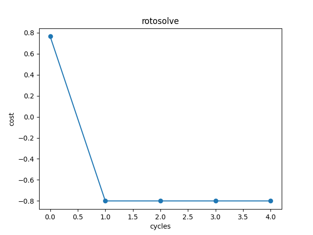

Classical Neural Network Module¶
The following classical neural network modules support automatic back propagation computation.After running the forward function, you can calculate the gradient by executing the reverse function.A simple example of the convolution layer is as follows:
from pyvqnet.tensor import arange
from pyvqnet import kfloat32
from pyvqnet.nn import Conv2D
# an image feed into two dimension convolution layer
b = 2 # batch size
ic = 2 # input channels
oc = 2 # output channels
hw = 4 # input width and heights
# two dimension convolution layer
test_conv = Conv2D(ic,oc,(2,2),(2,2),"same")
# input of shape [b,ic,hw,hw]
x0 = arange(1,b*ic*hw*hw+1,requires_grad=True,dtype=kfloat32)
x1 = x0.reshape([b,ic,hw,hw])
#forward function
x = test_conv(x1)
#backward function with autograd
x.backward()
print(x0.grad)
# [
# [[[0.0958736, 0.3032238, 0.0958736, 0.3032238],
# [-0.2665333, 0.1081382, -0.2665333, 0.1081382],
# [0.0958736, 0.3032238, 0.0958736, 0.3032238],
# [-0.2665333, 0.1081382, -0.2665333, 0.1081382]],
# [[-0.0068994, 0.0914679, -0.0068994, 0.0914679],
# [-0.2820665, 0.3160213, -0.2820665, 0.3160213],
# [-0.0068994, 0.0914679, -0.0068994, 0.0914679],
# [-0.2820665, 0.3160213, -0.2820665, 0.3160213]]],
# [[[0.0958736, 0.3032238, 0.0958736, 0.3032238],
# [-0.2665333, 0.1081382, -0.2665333, 0.1081382],
# [0.0958736, 0.3032238, 0.0958736, 0.3032238],
# [-0.2665333, 0.1081382, -0.2665333, 0.1081382]],
# [[-0.0068994, 0.0914679, -0.0068994, 0.0914679],
# [-0.2820665, 0.3160213, -0.2820665, 0.3160213],
# [-0.0068994, 0.0914679, -0.0068994, 0.0914679],
# [-0.2820665, 0.3160213, -0.2820665, 0.3160213]]]
# ]
Module Class¶
abstract calculation module
Module¶
- class pyvqnet.nn.module.Module¶
Base class for all neural network modules including quantum modules or classic modules. Your models should also be subclass of this class for autograd calculation.
Modules can also contain other Modules, allowing to nest them in a tree structure. You can assign the submodules as regular attributes:
class Model(Module): def __init__(self): super(Model, self).__init__() self.conv1 = pyvqnet.nn.Conv2d(1, 20, (5,5)) self.conv2 = pyvqnet.nn.Conv2d(20, 20, (5,5)) def forward(self, x): x = pyvqnet.nn.activation.relu(self.conv1(x)) return pyvqnet.nn.activation.relu(self.conv2(x))
Submodules assigned in this way will be registered
forward¶
- pyvqnet.nn.module.Module.forward(x, *args, **kwargs)¶
Abstract method which performs forward pass.
- Parameters:
x – input QTensor
*args – A non-keyword variable parameter
**kwargs – A keyword variable parameter
- Returns:
module output
Example:
import numpy as np from pyvqnet.tensor import QTensor import pyvqnet as vq from pyvqnet.nn import Conv2D b = 2 ic = 3 oc = 2 test_conv = Conv2D(ic, oc, (3, 3), (2, 2), "same") x0 = QTensor(np.arange(1, b * ic * 5 * 5 + 1).reshape([b, ic, 5, 5]), requires_grad=True, dtype=vq.kfloat32) x = test_conv.forward(x0) print(x) # [ # [[[4.3995643, 3.9317808, -2.0707254], # [20.1951981, 21.6946659, 14.2591858], # [38.4702759, 31.9730244, 24.5977650]], # [[-17.0607567, -31.5377998, -7.5618000], # [-22.5664024, -40.3876266, -15.1564388], # [-3.1080279, -18.5986233, -8.0648050]]], # [[[6.6493244, -13.4840755, -20.2554188], # [54.4235802, 34.4462433, 26.8171902], # [90.2827682, 62.9092331, 51.6892929]], # [[-22.3385429, -45.2448578, 5.7101378], # [-32.9464149, -60.9557228, -10.4994345], # [5.9029331, -20.5480480, -0.9379558]]] # ]
state_dict¶
- pyvqnet.nn.module.Module.state_dict(destination=None, prefix='')¶
Return a dictionary containing a whole state of the module.
Both parameters and persistent buffers (e.g. running averages) are included. Keys are corresponding parameter and buffer names.
- Parameters:
destination – a dict where state will be stored
prefix – the prefix for parameters and buffers used in this module
- Returns:
a dictionary containing a whole state of the module
Example:
from pyvqnet.nn import Conv2D test_conv = Conv2D(2,3,(3,3),(2,2),"same") print(test_conv.state_dict().keys()) #odict_keys(['weights', 'bias'])
toGPU¶
- pyvqnet.nn.module.Module.toGPU(device: int = DEV_GPU_0)¶
Move the parameters and buffer data of a module and its submodules to the specified GPU device.
device specifies the device whose internal data is stored. When device >= DEV_GPU_0, the data is stored on the GPU. If your computer has multiple GPUs, You can specify different devices to store data. For example, device = DEV_GPU_1 , DEV_GPU_2, DEV_GPU_3, … means it is stored on GPUs with different serial numbers.
Note
Module cannot be calculated on different GPUs. A Cuda error will be raised if you try to create a QTensor on a GPU whose ID exceeds the maximum number of verified GPUs.
- Parameters:
device – The device currently saving QTensor, default=DEV_GPU_0. device = pyvqnet.DEV_GPU_0, stored in the first GPU, devcie = DEV_GPU_1, stored in the second GPU, and so on.
- Returns:
Module moved to GPU device.
Examples:
from pyvqnet.nn.conv import ConvT2D test_conv = ConvT2D(3, 2, [4,4], [2, 2], "same") test_conv = test_conv.toGPU() print(test_conv.backend) #1000
toCPU¶
- pyvqnet.nn.module.Module.toCPU()¶
Moves the parameters and buffer data of a module and its submodules to a specific CPU device.
- Returns:
Module moved to CPU device.
Examples:
from pyvqnet.nn.conv import ConvT2D test_conv = ConvT2D(3, 2, [4,4], [2, 2], "same") test_conv = test_conv.toCPU() print(test_conv.backend) #0
save_parameters¶
- pyvqnet.utils.storage.save_parameters(obj, f)¶
Saves model parmeters to a disk file.
- Parameters:
obj – saved OrderedDict from
state_dict()f – a string or os.PathLike object containing a file name
- Returns:
None
Example:
from pyvqnet.nn import Module,Conv2D import pyvqnet class Net(Module): def __init__(self): super(Net, self).__init__() self.conv1 = Conv2D(input_channels=1, output_channels=6, kernel_size=(5, 5), stride=(1, 1), padding="valid") def forward(self, x): return super().forward(x) model = Net() pyvqnet.utils.storage.save_parameters(model.state_dict(),"tmp.model")
load_parameters¶
- pyvqnet.utils.storage.load_parameters(f)¶
Loads model paramters from a disk file.
The model instance should be created first.
- Parameters:
f – a string or os.PathLike object containing a file name
- Returns:
saved OrderedDict for
load_state_dict()
Example:
from pyvqnet.nn import Module,Conv2D import pyvqnet class Net(Module): def __init__(self): super(Net, self).__init__() self.conv1 = Conv2D(input_channels=1, output_channels=6, kernel_size=(5, 5), stride=(1, 1), padding="valid") def forward(self, x): return super().forward(x) model = Net() model1 = Net() # another Module object pyvqnet.utils.storage.save_parameters( model.state_dict(),"tmp.model") model_para = pyvqnet.utils.storage.load_parameters("tmp.model") model1.load_state_dict(model_para)
ModuleList¶
- class pyvqnet.nn.module.ModuleList([pyvqnet.nn.module.Module])¶
Save submodules in a list. ModuleList can be indexed like a normal Python list, and the internal parameters of the Module it contains can be saved.
- Parameters:
modules – list of nn.Modules
- Returns:
a list of modules
Example:
from pyvqnet.tensor import * from pyvqnet.nn import Module,Linear,ModuleList from pyvqnet.qnn import ProbsMeasure,QuantumLayer import pyqpanda as pq def pqctest (input,param,qubits,cubits,m_machine): circuit = pq.QCircuit() circuit.insert(pq.H(qubits[0])) circuit.insert(pq.H(qubits[1])) circuit.insert(pq.H(qubits[2])) circuit.insert(pq.H(qubits[3])) circuit.insert(pq.RZ(qubits[0],input[0])) circuit.insert(pq.RZ(qubits[1],input[1])) circuit.insert(pq.RZ(qubits[2],input[2])) circuit.insert(pq.RZ(qubits[3],input[3])) circuit.insert(pq.CNOT(qubits[0],qubits[1])) circuit.insert(pq.RZ(qubits[1],param[0])) circuit.insert(pq.CNOT(qubits[0],qubits[1])) circuit.insert(pq.CNOT(qubits[1],qubits[2])) circuit.insert(pq.RZ(qubits[2],param[1])) circuit.insert(pq.CNOT(qubits[1],qubits[2])) circuit.insert(pq.CNOT(qubits[2],qubits[3])) circuit.insert(pq.RZ(qubits[3],param[2])) circuit.insert(pq.CNOT(qubits[2],qubits[3])) prog = pq.QProg() prog.insert(circuit) rlt_prob = ProbsMeasure([0,2],prog,m_machine,qubits) return rlt_prob class M(Module): def __init__(self): super(M, self).__init__() self.pqc2 = ModuleList([QuantumLayer(pqctest,3,"cpu",4,1), Linear(4,1) ]) def forward(self, x, *args, **kwargs): y = self.pqc2[0](x) + self.pqc2[1](x) return y mm = M() print(mm.state_dict().keys()) #odict_keys(['pqc2.0.m_para', 'pqc2.1.weights', 'pqc2.1.bias'])
ParameterList¶
- class pyvqnet.nn.module.ParameterList([pyvqnet.nn.module.Module])¶
To store parameters in a list, a ParameterList can be indexed like a normal Python list, and the internal parameters of the Parameter it contains can be stored.
- Parameters:
modules – nn.Parameter list.
- Returns:
a Parameter list.
Example:
from pyvqnet import nn class MyModule(nn.Module): def __init__(self): super().__init__() self.params = nn.ParameterList([nn.Parameter((10, 10)) for i in range(10)]) def forward(self, x): # ParameterList can act as an iterable, or be indexed using ints for i, p in enumerate(self.params): x = self.params[i // 2] * x + p * x return x model = MyModule() print(model.state_dict().keys())
Sequential¶
- class pyvqnet.nn.module.Sequential([pyvqnet.nn.module.Module])¶
Modules will be added in the order they are passed in. Alternatively, a
OrderedDictof modules can be passed in. Theforward()method ofSequentialtakes any input and forwards it to its first module. It thenSequentialthe output to the input of each subsequent module in turn, and finally returns the output of the last module.- Parameters:
modules – module to append.
- Returns:
Sequential.
Example:
from pyvqnet import nn from collections import OrderedDict # Using Sequential to create a small model. model = nn.Sequential( nn.Conv2D(1,20,(5, 5)), nn.ReLu(), nn.Conv2D(20,64,(5, 5)), nn.ReLu() ) print(model.state_dict().keys()) # Using Sequential with OrderedDict. This is functionally the same as the above code model = nn.Sequential(OrderedDict([ ('conv1', nn.Conv2D(1,20,(5, 5))), ('relu1', nn.ReLu()), ('conv2', nn.Conv2D(20,64,(5, 5))), ('relu2', nn.ReLu()) ])) print(model.state_dict().keys())
Classical Neural Network Layer¶
Conv1D¶
- class pyvqnet.nn.Conv1D(input_channels: int, output_channels: int, kernel_size: int, stride: int = 1, padding='valid', use_bias: str = True, kernel_initializer=None, bias_initializer=None, dilation_rate: int = 1, group: int = 1, dtype=None, name='')¶
Apply a 1-dimensional convolution kernel over an input . Inputs to the conv module are of shape (batch_size, input_channels, height)
- Parameters:
input_channels – int - Number of input channels
output_channels – int - Number of kernels
kernel_size – int - Size of a single kernel. kernel shape = [output_channels,input_channels/group,kernel_size,1]
stride – int - Stride, defaults to 1
padding – str|int - padding option, which can be a string {‘valid’, ‘same’} or an integer giving the amount of implicit padding to apply . Default “valid”.
use_bias – bool - if use bias, defaults to True
kernel_initializer – callable - Defaults to None
bias_initializer – callable - Defaults to None
dilation_rate – int - dilated size, defaults: 1
group – int - number of groups of grouped convolutions. Default: 1
dtype – The data type of the parameter, defaults: None, use the default data type kfloat32, which represents a 32-bit floating point number.
name – The name of the module, default: “”.
- Returns:
a Conv1D class
Note
padding='valid'is the same as no padding.padding='same'pads the input so the output has the shape as the input.Example:
import numpy as np from pyvqnet.tensor import QTensor from pyvqnet.nn import Conv1D import pyvqnet b= 2 ic =3 oc = 2 test_conv = Conv1D(ic,oc,3,2,"same") x0 = QTensor(np.arange(1,b*ic*5*5 +1).reshape([b,ic,25]),requires_grad=True,dtype=pyvqnet.kfloat32) x = test_conv.forward(x0) print(x) # [ # [[12.4438553, 14.8618164, 15.5595102, 16.2572021, 16.9548950, 17.6525879, 18.3502808, 19.0479736, 19.7456665, 20.4433594, 21.1410522, 21.8387432, 10.5725441], # [-13.7539215, 1.0263026, 1.2747254, 1.5231485, 1.7715728, 2.0199962, 2.2684195, 2.5168428, 2.7652662, 3.0136888, 3.2621140, 3.5105357, 14.0515862]], # [[47.4924164, 41.0252953, 41.7229881, 42.4206772, 43.1183739, 43.8160667, 44.5137596, 45.2114487, 45.9091415, 46.6068344, 47.3045311, 48.0022240, 18.3216572], # [-47.2381554, 10.3421783, 10.5906038, 10.8390274, 11.0874519, 11.3358765, 11.5842953, 11.8327246, 12.0811434, 12.3295631, 12.5779924, 12.8264122, 39.4719162]] # ]
Conv2D¶
- class pyvqnet.nn.Conv2D(input_channels: int, output_channels: int, kernel_size: tuple, stride: tuple = (1, 1), padding='valid', use_bias=True, kernel_initializer=None, bias_initializer=None, dilation_rate: int = 1, group: int = 1, dtype=None, name='')¶
Apply a two-dimensional convolution kernel over an input . Inputs to the conv module are of shape (batch_size, input_channels, height, width)
- Parameters:
input_channels – int - Number of input channels
output_channels – int - Number of kernels
kernel_size – tuple|list - Size of a single kernel. kernel shape = [output_channels,input_channels/group,kernel_size,kernel_size]
stride – tuple|list - Stride, defaults to (1, 1)|[1,1]
padding – str|tuple - padding option, which can be a string {‘valid’, ‘same’} or a tuple of integers giving the amount of implicit padding to apply on both sides. Default “valid”.
use_bias – bool - if use bias, defaults to True
kernel_initializer – callable - Defaults to None
bias_initializer – callable - Defaults to None
dilation_rate – int - dilated size, defaults: 1
group – int - number of groups of grouped convolutions. Default: 1.
dtype – The data type of the parameter, defaults: None, use the default data type kfloat32, which represents a 32-bit floating point number.
name – The name of the module, default: “”.
- Returns:
a Conv2D class
Note
padding='valid'is the same as no padding.padding='same'pads the input so the output has the shape as the input.Example:
import numpy as np from pyvqnet.tensor import QTensor from pyvqnet.nn import Conv2D import pyvqnet b= 2 ic =3 oc = 2 test_conv = Conv2D(ic,oc,(3,3),(2,2),"same") x0 = QTensor(np.arange(1,b*ic*5*5+1).reshape([b,ic,5,5]),requires_grad=True,dtype=pyvqnet.kfloat32) x = test_conv.forward(x0) print(x) # [ # [[[-0.1256833, 23.8978596, 26.7449780], # [-7.2959919, 33.4023743, 42.1283913], # [-8.7684336, 25.2698975, 40.4024887]], # [[33.0653763, 40.3120155, 27.3781891], # [39.2921371, 45.8685760, 38.1885109], # [23.1873779, 12.0480318, 12.7278290]]], # [[[-0.9730744, 61.3967094, 79.0511856], # [-29.3652401, 75.0349350, 112.7325439], # [-26.4682808, 59.0924797, 104.2572098]], # [[66.8064194, 96.0953140, 72.9157486], # [90.9154129, 110.7232437, 91.2616043], # [56.8825951, 34.6904907, 30.1957760]]] # ]
ConvT2D¶
- class pyvqnet.nn.ConvT2D(input_channels, output_channels, kernel_size, stride=[1, 1], padding='valid', use_bias='True', kernel_initializer=None, bias_initializer=None, dilation_rate: int = 1, out_padding=(0, 0), group: int = 1, dtype=None, name='')¶
Apply a two-dimensional transposed convolution kernel over an input. Inputs to the convT module are of shape (batch_size, input_channels, height, width)
- Parameters:
input_channels – int - Number of input channels
output_channels – int - Number of kernels
kernel_size – tuple|list - Size of a single kernel. kernel shape = [input_channels,output_channels/group,kernel_size,kernel_size]
stride – tuple|list - Stride, defaults to (1, 1)|[1,1]
padding – str|tuple - padding option, which can be a string {‘valid’, ‘same’} or a tuple of integers giving the amount of implicit padding to apply on both sides. Default “valid”.
use_bias – bool - Whether to use a offset item. Default to use
kernel_initializer – callable - Defaults to None
bias_initializer – callable - Defaults to None
dilation_rate – int - dilated size, defaults: 1.
out_padding – Additional size added to one side of each dimension in the output shape. Default: (0,0)
group – int - number of groups of grouped convolutions. Default: 1.
dtype – The data type of the parameter, defaults: None, use the default data type kfloat32, which represents a 32-bit floating point number.
name – The name of the module, default: “”.
- Returns:
a ConvT2D class
Note
padding='valid'is the same as no padding.padding='same'pads the input so the output has the shape as the input.Example:
import numpy as np from pyvqnet.tensor import QTensor from pyvqnet.nn import ConvT2D import pyvqnet test_conv = ConvT2D(3, 2, (3, 3), (1, 1), "valid") x = QTensor(np.arange(1, 1 * 3 * 5 * 5+1).reshape([1, 3, 5, 5]), requires_grad=True,dtype=pyvqnet.kfloat32) y = test_conv.forward(x) print(y) # [ # [[[-3.3675897, 4.8476148, 14.2448473, 14.8897810, 15.5347166, 20.0420666, 10.9831696], # [-14.0110836, -3.2500827, 6.4022207, 6.5149083, 6.6275964, 23.7946320, 12.1828709], # [-22.2661152, -3.5112300, 12.9493723, 13.5486069, 14.1478367, 39.6327629, 18.8349991], # [-24.4063797, -3.0093837, 15.9455290, 16.5447617, 17.1439915, 44.7691879, 21.3293095], # [-26.5466480, -2.5075383, 18.9416828, 19.5409145, 20.1401463, 49.9056053, 23.8236179], # [-24.7624626, -13.7395811, -7.9510674, -7.9967723, -8.0424776, 19.2783546, 7.0562835], # [-3.5170188, 10.2280807, 16.1939259, 16.6804695, 17.1670132, 21.2262039, 6.2889833]], # [[-2.0570512, -9.5056667, -25.0429192, -25.9464111, -26.8499031, -24.7305946, -16.9881954], # [-0.7620960, -18.3383904, -49.8948288, -51.2528229, -52.6108208, -52.2179604, -34.3664169], # [-11.7121849, -27.1864738, -62.2154846, -63.6433640, -65.0712280, -52.6787071, -38.4497032], # [-13.3643141, -29.0211792, -69.3548126, -70.7826691, -72.2105408, -58.1659012, -43.7543182], # [-15.0164423, -30.8558884, -76.4941254, -77.9219971, -79.3498535, -63.6530838, -49.0589256], # [-11.6070204, -14.1940546, -35.5471687, -36.0715408, -36.5959129, -23.9147663, -22.8668022], # [-14.4390459, -4.9011412, -6.4719801, -6.5418491, -6.6117167, 9.3329525, -1.7254852]]] # ]
AvgPool1D¶
- class pyvqnet.nn.AvgPool1D(kernel, stride, padding='valid', name='')¶
This operation applies a 1D average pooling over an input signal composed of several input planes.
- Parameters:
kernel – size of the average pooling windows
strides – factor by which to downscale
padding – one of “valid”, “same” or integer specifies the padding value, defaults to “valid”
name – name of the output layer.
- Returns:
AvgPool1D layer
Note
padding='valid'is the same as no padding.padding='same'pads the input so the output has the shape as the input.Example:
import numpy as np from pyvqnet.tensor import QTensor from pyvqnet.nn import AvgPool1D test_mp = AvgPool1D([3],[2],"same") x= QTensor(np.array([0, 1, 0, 4, 5, 2, 3, 2, 1, 3, 4, 4, 0, 4, 3, 2, 5, 2, 6, 4, 1, 0, 0, 5, 7],dtype=float).reshape([1,5,5]),requires_grad=True) y= test_mp.forward(x) print(y) # [ # [[0.3333333, 1.6666666, 3], # [1.6666666, 2, 1.3333334], # [2.6666667, 2.6666667, 2.3333333], # [2.3333333, 4.3333335, 3.3333333], # [0.3333333, 1.6666666, 4]] # ]
MaxPool1D¶
- class pyvqnet.nn.MaxPool1D(kernel, stride, padding='valid', dtype=None, name='')¶
This operation applies a 1D max pooling over an input signal composed of several input planes.
- Parameters:
kernel – size of the max pooling windows
strides – factor by which to downscale
padding – one of “valid”, “same” or integer specifies the padding value, defaults to “valid”
name – The name of the module, default: “”.
- Returns:
MaxPool1D layer
Note
padding='valid'is the same as no padding.padding='same'pads the input so the output has the shape as the input.Example:
import numpy as np from pyvqnet.tensor import QTensor from pyvqnet.nn import MaxPool1D test_mp = MaxPool1D([3],[2],"same") x= QTensor(np.array([0, 1, 0, 4, 5, 2, 3, 2, 1, 3, 4, 4, 0, 4, 3, 2, 5, 2, 6, 4, 1, 0, 0, 5, 7],dtype=float).reshape([1,5,5]),requires_grad=True) y= test_mp.forward(x) print(y) #[[[1. 4. 5.] # [3. 3. 3.] # [4. 4. 4.] # [5. 6. 6.] # [1. 5. 7.]]]
AvgPool2D¶
- class pyvqnet.nn.AvgPool2D(kernel, stride, padding='valid', name='')¶
This operation applies 2D average pooling over input features .
- Parameters:
kernel – size of the average pooling windows
strides – factors by which to downscale
padding – one of “valid”, “same” or tuple with integers specifies the padding value of column and row,defaults to “valid”
name – name of the output layer
- Returns:
AvgPool2D layer
Note
padding='valid'is the same as no padding.padding='same'pads the input so the output has the shape as the input.Example:
import numpy as np from pyvqnet.tensor import QTensor from pyvqnet.nn import AvgPool2D test_mp = AvgPool2D([2,2],[2,2],"valid") x= QTensor(np.array([0, 1, 0, 4, 5, 2, 3, 2, 1, 3, 4, 4, 0, 4, 3, 2, 5, 2, 6, 4, 1, 0, 0, 5, 7],dtype=float).reshape([1,1,5,5]),requires_grad=True) y= test_mp.forward(x) print(y) #[[[[1.5 1.75] # [3.75 3. ]]]]
MaxPool2D¶
- class pyvqnet.nn.MaxPool2D(kernel, stride, padding='valid', name='')¶
This operation applies 2D max pooling over input features.
- Parameters:
kernel – size of the max pooling windows
strides – factor by which to downscale
padding – one of “valid”, “same” or tuple with integers specifies the padding value of column and row, defaults to “valid”
name – name of the output layer
- Returns:
MaxPool2D layer
Note
padding='valid'is the same as no padding.padding='same'pads the input so the output has the shape as the input.Example:
import numpy as np from pyvqnet.tensor import QTensor from pyvqnet.nn import MaxPool2D test_mp = MaxPool2D([2,2],[2,2],"valid") x= QTensor(np.array([0, 1, 0, 4, 5, 2, 3, 2, 1, 3, 4, 4, 0, 4, 3, 2, 5, 2, 6, 4, 1, 0, 0, 5, 7],dtype=float).reshape([1,1,5,5]),requires_grad=True) y= test_mp.forward(x) print(y) # [[[[3. 4.] # [5. 6.]]]]
Embedding¶
- class pyvqnet.nn.embedding.Embedding(num_embeddings, embedding_dim, weight_initializer=<function xavier_normal>, dtype=None, name: str = '')¶
This module is often used to store word embeddings and retrieve them using indices. The input to the module is a list of indices, and the output is the corresponding word embeddings.
- Parameters:
num_embeddings – int - size of the dictionary of embeddings.
embedding_dim – int - the size of each embedding vector.
weight_initializer – callable - defaults to normal.
dtype – The data type of the parameter, defaults: None, use the default data type kfloat32, which represents a 32-bit floating point number.
name – name of the output layer.
- Returns:
a Embedding class
Example:
import numpy as np from pyvqnet.tensor import QTensor from pyvqnet.nn.embedding import Embedding import pyvqnet vlayer = Embedding(30,3) x = QTensor(np.arange(1,25).reshape([2,3,2,2]),dtype= pyvqnet.kint64) y = vlayer(x) print(y) # [ # [[[[-0.3168081, 0.0329394, -0.2934906], # [0.1057295, -0.2844988, -0.1687456]], # [[-0.2382513, -0.3642318, -0.2257225], # [0.1563180, 0.1567665, 0.3038477]]], # [[[-0.4131152, -0.0564500, -0.2804018], # [-0.2955172, -0.0009581, -0.1641144]], # [[0.0692555, 0.1094901, 0.4099118], # [0.4348361, 0.0304361, -0.0061203]]], # [[[-0.3310401, -0.1836129, 0.1098949], # [-0.1840732, 0.0332474, -0.0261806]], # [[-0.1489778, 0.2519453, 0.3299376], # [-0.1942692, -0.1540277, -0.2335350]]]], # [[[[-0.2620637, -0.3181309, -0.1857461], # [-0.0878164, -0.4180320, -0.1831555]], # [[-0.0738970, -0.1888980, -0.3034399], # [0.1955448, -0.0409723, 0.3023460]]], # [[[0.2430045, 0.0880465, 0.4309453], # [-0.1796514, -0.1432367, -0.1253638]], # [[-0.5266719, 0.2386262, -0.0329155], # [0.1033449, -0.3442690, -0.0471130]]], # [[[-0.5336705, -0.1939755, -0.3000667], # [0.0059001, 0.5567381, 0.1926173]], # [[-0.2385869, -0.3910453, 0.2521235], # [-0.0246447, -0.0241158, -0.1402829]]]] # ]
BatchNorm2d¶
- class pyvqnet.nn.BatchNorm2d(channel_num: int, momentum: float = 0.1, epsilon: float = 1e-5, affine=True, beta_initializer=zeros, gamma_initializer=ones, dtype=None, name='')¶
Applies Batch Normalization over a 4D input (B,C,H,W) as described in the paper Batch Normalization: Accelerating Deep Network Training by Reducing Internal Covariate Shift .
\[y = \frac{x - \mathrm{E}[x]}{\sqrt{\mathrm{Var}[x] + \epsilon}} * \gamma + \beta\]where \(\gamma\) and \(\beta\) are learnable parameters.Also by default, during training this layer keeps running estimates of its computed mean and variance, which are then used for normalization during evaluation. The running estimates are kept with a default momentum of 0.1.
- Parameters:
channel_num – int - the number of input features channels.
momentum – float - momentum when calculation exponentially weighted average, defaults to 0.1.
epsilon – float - numerical stability constant, defaults to 1e-5.
affine – A boolean value that, when set to
True, causes this module to have learnable per-channel affine parameters, initialized to 1 (for weights) and 0 (for biases). Default:True.beta_initializer – callable - defaults to zeros.
gamma_initializer – callable - defaults to ones.
dtype – The data type of the parameter, defaults: None, use the default data type kfloat32, which represents a 32-bit floating point number.
name – name of the output layer
- Returns:
a BatchNorm2d class
Example:
import numpy as np from pyvqnet.tensor import QTensor from pyvqnet.nn import BatchNorm2d import pyvqnet b = 2 ic = 2 test_conv = BatchNorm2d(ic) x = QTensor(np.arange(1, 17).reshape([b, ic, 4, 1]), requires_grad=True, dtype=pyvqnet.kfloat32) y = test_conv.forward(x) print(y) # [ # [[[-1.3242440], # [-1.0834724], # [-0.8427007], # [-0.6019291]], # [[-1.3242440], # [-1.0834724], # [-0.8427007], # [-0.6019291]]], # [[[0.6019291], # [0.8427007], # [1.0834724], # [1.3242440]], # [[0.6019291], # [0.8427007], # [1.0834724], # [1.3242440]]] # ]
BatchNorm1d¶
- class pyvqnet.nn.BatchNorm1d(channel_num: int, momentum: float = 0.1, epsilon: float = 1e-5, affine=True, beta_initializer=zeros, gamma_initializer=ones, dtype=None, name='')¶
Applies Batch Normalization over a 2D input (B,C) as described in the paper Batch Normalization: Accelerating Deep Network Training by Reducing Internal Covariate Shift .
\[y = \frac{x - \mathrm{E}[x]}{\sqrt{\mathrm{Var}[x] + \epsilon}} * \gamma + \beta\]where \(\gamma\) and \(\beta\) are learnable parameters.Also by default, during training this layer keeps running estimates of its computed mean and variance, which are then used for normalization during evaluation. The running estimates are kept with a default momentum of 0.1.
- Parameters:
channel_num – int - the number of input features channels.
momentum – float - momentum when calculation exponentially weighted average, defaults to 0.1
epsilon – float - numerical stability constant, defaults to 1e-5.
affine – A boolean value that, when set to
True, causes this module to have learnable per-channel affine parameters, initialized to 1 (for weights) and 0 (for biases). Default:True.beta_initializer – callable - defaults to zeros.
gamma_initializer – callable - defaults to ones.
dtype – The data type of the parameter, defaults: None, use the default data type kfloat32, which represents a 32-bit floating point number.
name – name of the output layer
- Returns:
a BatchNorm1d class
Example:
import numpy as np from pyvqnet.tensor import QTensor from pyvqnet.nn import BatchNorm1d import pyvqnet test_conv = BatchNorm1d(4) x = QTensor(np.arange(1, 17).reshape([4, 4]), requires_grad=True, dtype=pyvqnet.kfloat32) y = test_conv.forward(x) print(y) # [ # [-1.3416405, -1.3416405, -1.3416405, -1.3416405], # [-0.4472135, -0.4472135, -0.4472135, -0.4472135], # [0.4472135, 0.4472135, 0.4472135, 0.4472135], # [1.3416405, 1.3416405, 1.3416405, 1.3416405] # ]
LayerNormNd¶
- class pyvqnet.nn.layer_norm.LayerNormNd(normalized_shape: list, epsilon: float = 1e-5, affine=True, dtype=None, name='')¶
Layer normalization is performed on the last several dimensions of any input. The specific method is as described in the paper: Layer Normalization.
\[y = \frac{x - \mathrm{E}[x]}{ \sqrt{\mathrm{Var}[x] + \epsilon}} * \gamma + \beta\]For inputs like (B,C,H,W,D),
norm_shapecan be [C,H,W,D],[H,W,D],[W,D] or [D] .- Parameters:
norm_shape – float - standardize the shape.
epsilon – float - numerical stability constant, defaults to 1e-5.
affine – A boolean value that, when set to
True, causes this module to have learnable per-channel affine parameters, initialized to 1 (for weights) and 0 (for biases). Default:True.dtype – The data type of the parameter, defaults: None, use the default data type kfloat32, which represents a 32-bit floating point number.
name – name of the output layer.
- Returns:
a LayerNormNd class.
Example:
import numpy as np from pyvqnet.tensor import QTensor form pyvqnet import kfloat32 from pyvqnet.nn.layer_norm import LayerNormNd ic = 4 test_conv = LayerNormNd([2,2]) x = QTensor(np.arange(1,17).reshape([2,2,2,2]),requires_grad=True,dtype=kfloat32) y = test_conv.forward(x) print(y) # [ # [[[-1.3416355, -0.4472118], # [0.4472118, 1.3416355]], # [[-1.3416355, -0.4472118], # [0.4472118, 1.3416355]]], # [[[-1.3416355, -0.4472118], # [0.4472118, 1.3416355]], # [[-1.3416355, -0.4472118], # [0.4472118, 1.3416355]]] # ]
LayerNorm2d¶
- class pyvqnet.nn.layer_norm.LayerNorm2d(norm_size: int, epsilon: float = 1e-5, affine=True, dtype=None, name='')¶
Applies Layer Normalization over a mini-batch of 4D inputs as described in the paper Layer Normalization
\[y = \frac{x - \mathrm{E}[x]}{ \sqrt{\mathrm{Var}[x] + \epsilon}} * \gamma + \beta\]The mean and standard-deviation are calculated over the last D dimensions size.
For input like (B,C,H,W),
norm_sizeshould equals to C * H * W.- Parameters:
norm_size – float - normalize size,equals to C * H * W
epsilon – float - numerical stability constant, defaults to 1e-5
affine – A boolean value that, when set to
True, causes this module to have learnable per-channel affine parameters, initialized to 1 (for weights) and 0 (for biases). Default:True.name – name of the output layer
dtype – The data type of the parameter, defaults: None, use the default data type kfloat32, which represents a 32-bit floating point number.
- Returns:
a LayerNorm2d class
Example:
import numpy as np import pyvqnet from pyvqnet.tensor import QTensor from pyvqnet.nn.layer_norm import LayerNorm2d ic = 4 test_conv = LayerNorm2d(8) x = QTensor(np.arange(1,17).reshape([2,2,4,1]),requires_grad=True,dtype=pyvqnet.kfloat32) y = test_conv.forward(x) print(y) # [ # [[[-1.5275238], # [-1.0910884], # [-0.6546531], # [-0.2182177]], # [[0.2182177], # [0.6546531], # [1.0910884], # [1.5275238]]], # [[[-1.5275238], # [-1.0910884], # [-0.6546531], # [-0.2182177]], # [[0.2182177], # [0.6546531], # [1.0910884], # [1.5275238]]] # ]
LayerNorm1d¶
- class pyvqnet.nn.layer_norm.LayerNorm1d(norm_size: int, epsilon: float = 1e-5, affine=True, dtype=None, name='')¶
Applies Layer Normalization over a mini-batch of 2D inputs as described in the paper Layer Normalization
\[y = \frac{x - \mathrm{E}[x]}{ \sqrt{\mathrm{Var}[x] + \epsilon}} * \gamma + \beta\]The mean and standard-deviation are calculated over the last dimensions size, where
norm_sizeis the value of last dim size.- Parameters:
norm_size – float - normalize size,equals to last dim
epsilon – float - numerical stability constant, defaults to 1e-5
affine – A boolean value that, when set to
True, causes this module to have learnable per-channel affine parameters, initialized to 1 (for weights) and 0 (for biases). Default:True.dtype – The data type of the parameter, defaults: None, use the default data type kfloat32, which represents a 32-bit floating point number.
name – name of the output layer
- Returns:
a LayerNorm1d class
Example:
import numpy as np import pyvqnet from pyvqnet.tensor import QTensor from pyvqnet.nn.layer_norm import LayerNorm1d test_conv = LayerNorm1d(4) x = QTensor(np.arange(1,17).reshape([4,4]),requires_grad=True,dtype=pyvqnet.kfloat32) y = test_conv.forward(x) print(y) # [ # [-1.3416355, -0.4472118, 0.4472118, 1.3416355], # [-1.3416355, -0.4472118, 0.4472118, 1.3416355], # [-1.3416355, -0.4472118, 0.4472118, 1.3416355], # [-1.3416355, -0.4472118, 0.4472118, 1.3416355] # ]
GroupNorm¶
- class pyvqnet.nn.group_norm.GroupNorm(num_groups: int, num_channels: int, epsilon=1e-5, affine=True, dtype=None, name='')¶
Apply group normalization to a mini-batch of inputs. Input: \((N, C, *)\) where \(C=\text{num_channels}\) , Output: \((N, C, *)\) .
This layer implements the operation described in the paper Group Normalization
\[y = \frac{x - \mathrm{E}[x]}{ \sqrt{\mathrm{Var}[x] + \epsilon}} * \gamma + \beta\]The input channels are divided into
num_groupsgroups, each containingnum_channels / num_groupschannels.num_channelsmust be divisible bynum_groups. The mean and standard deviation are computed separately for each group. IfaffineisTrue, then \(\gamma\) and \(\beta\) are learnable. Per-channel affine transformation parameter vector of sizenum_channels.- Parameters:
(int) (num_channels) – Number of groups to split channels into
(int) – Number of channels expected in the input
eps – Value to add to the denominator for numerical stability. Default: 1e-5
affine – A boolean value that, when set to
True, causes this module to have learnable per-channel affine parameters, initialized to 1 (for weights) and 0 (for biases). Default:True.dtype – The data type of the parameter, defaults: None, use the default data type kfloat32, which represents a 32-bit floating point number.
name – name of the output layer
- Returns:
GroupNorm class
Example:
import numpy as np from pyvqnet.tensor import QTensor from pyvqnet import kfloat32 from pyvqnet.nn import GroupNorm test_conv = GroupNorm(2,10) x = QTensor(np.arange(0,60*2*5).reshape([2,10,3,2,5]),requires_grad=True,dtype=kfloat32) y = test_conv.forward(x) print(y)
Linear¶
- class pyvqnet.nn.Linear(input_channels, output_channels, weight_initializer=None, bias_initializer=None, use_bias=True, dtype=None, name: str = '')¶
Linear module (fully-connected layer). \(y = x@A.T + b\)
- Parameters:
input_channels – int - number of inputs features
output_channels – int - number of output features
weight_initializer – callable - defaults to normal
bias_initializer – callable - defaults to zeros
use_bias – bool - defaults to True
dtype – The data type of the parameter, defaults: None, use the default data type kfloat32, which represents a 32-bit floating point number.
name – name of the output layer
- Returns:
a Linear class
Example:
import numpy as np import pyvqnet from pyvqnet.tensor import QTensor from pyvqnet.nn import Linear c1 =2 c2 = 3 cin = 7 cout = 5 n = Linear(cin,cout) input = QTensor(np.arange(1,c1*c2*cin+1).reshape((c1,c2,cin)),requires_grad=True,dtype=pyvqnet.kfloat32) y = n.forward(input) print(y) # [ # [[4.3084583, -1.9228780, -0.3428757, 1.2840536, -0.5865945], # [9.8339605, -5.5135884, -3.1228657, 4.3025794, -4.1492314], # [15.3594627, -9.1042995, -5.9028554, 7.3211040, -7.7118683]], # [[20.8849659, -12.6950111, -8.6828451, 10.3396301, -11.2745066], # [26.4104652, -16.2857227, -11.4628344, 13.3581581, -14.8371439], # [31.9359703, -19.8764324, -14.2428246, 16.3766804, -18.3997803]] # ]
Dropout¶
- class pyvqnet.nn.dropout.Dropout(dropout_rate=0.5)¶
Dropout module.The dropout module randomly sets the outputs of some units to zero, while upscale others according to the given dropout probability.
- Parameters:
dropout_rate – float - probability that a neuron will be set to zero
- Returns:
a Dropout class
Example:
from pyvqnet.nn.dropout import Dropout import numpy as np from pyvqnet.tensor import QTensor b = 2 ic = 2 x = QTensor(np.arange(-1*ic*2*2,(b-1)*ic*2*2).reshape([b,ic,2,2]),requires_grad=True) droplayer = Dropout(0.5) droplayer.train() y = droplayer(x) print(y) # [[[[-16. -14.] # [-12. 0.]] # [[ -8. -6.] # [ -4. -2.]]] # [[[ 0. 2.] # [ 0. 6.]] # [[ 0. 0.] # [ 0. 14.]]]]
DropPath¶
- class pyvqnet.nn.dropout.DropPath(dropout_rate=0.5, name='')¶
The DropPath module will drop paths (randomly deep) on a sample-by-sample basis.
- Parameters:
dropout_rate – float - The probability that the neuron is set to zero.
name – The name of this module, the default is “”.
- Returns:
DropPath instance.
Example:
import pyvqnet.nn as nn import pyvqnet.tensor as tensor x = tensor.randu([4]) y = nn.DropPath()(x) print(y) #[0.9074978,0.9350062,0.6896403,0.3541051]
Pixel_Shuffle¶
- class pyvqnet.nn.pixel_shuffle.Pixel_Shuffle(upscale_factors)¶
Rearrange tensors of shape: (, C * r^2, H, W) to a tensor of shape (, C, H * r, W * r) where r is the scaling factor.
- Parameters:
upscale_factors – factor to increase the scale transformation
- Returns:
Pixel_Shuffle module
Example:
from pyvqnet.nn import Pixel_Shuffle from pyvqnet.tensor import tensor ps = Pixel_Shuffle(3) inx = tensor.ones([5,2,3,18,4,4]) inx.requires_grad= True y = ps(inx) print(y.shape) #[5, 2, 3, 2, 12, 12]
Pixel_Unshuffle¶
- class pyvqnet.nn.pixel_shuffle.Pixel_Unshuffle(downscale_factors)¶
Reverses the Pixel_Shuffle operation by rearranging the elements. Shuffles a Tensor of shape (, C, H * r, W * r) to (, C * r^2, H, W) , where r is the shrink factor.
- Parameters:
downscale_factors – factor to increase the scale transformation
- Returns:
Pixel_Unshuffle module
Example:
from pyvqnet.nn import Pixel_Unshuffle from pyvqnet.tensor import tensor ps = Pixel_Unshuffle(3) inx = tensor.ones([5, 2, 3, 2, 12, 12]) inx.requires_grad = True y = ps(inx) print(y.shape) #[5, 2, 3, 18, 4, 4]
GRU¶
- class pyvqnet.nn.gru.GRU(input_size, hidden_size, num_layers=1, nonlinearity='tanh', batch_first=True, use_bias=True, bidirectional=False, dtype=None, name: str = '')¶
Gated Recurrent Unit (GRU) module. Support multi-layer stacking, bidirectional configuration. The calculation formula of the single-layer one-way GRU is as follows:
\[\begin{split}\begin{array}{ll} r_t = \sigma(W_{ir} x_t + b_{ir} + W_{hr} h_{(t-1)} + b_{hr}) \\ z_t = \sigma(W_{iz} x_t + b_{iz} + W_{hz} h_{(t-1)} + b_{hz}) \\ n_t = \tanh(W_{in} x_t + b_{in} + r_t * (W_{hn} h_{(t-1)}+ b_{hn})) \\ h_t = (1 - z_t) * n_t + z_t * h_{(t-1)} \end{array}\end{split}\]- Parameters:
input_size – Input feature dimensions.
hidden_size – Hidden feature dimensions.
num_layers – Stack layer numbers. default: 1.
batch_first – If batch_first is True, input shape should be [batch_size,seq_len,feature_dim], if batch_first is False, the input shape should be [seq_len,batch_size,feature_dim],default: True.
use_bias – If use_bias is False, this module will not contain bias. default: True.
bidirectional – If bidirectional is True, the module will be bidirectional GRU. default: False.
dtype – The data type of the parameter, defaults: None, use the default data type kfloat32, which represents a 32-bit floating point number.
name – name of the output layer
- Returns:
A GRU module instance.
Example:
from pyvqnet.nn import GRU from pyvqnet.tensor import tensor rnn2 = GRU(4, 6, 2, batch_first=False, bidirectional=True) input = tensor.ones([5, 3, 4]) h0 = tensor.ones([4, 3, 6]) output, hn = rnn2(input, h0) print(output) print(hn) # [ # [[0.2815045, 0.2056844, 0.0750246, 0.5802019, 0.3536537, 0.8136684, -0.0034523, 0.1634004, 0.6099871, 0.8451654, -0.2833570, 0.7294812], # [0.2815045, 0.2056844, 0.0750246, 0.5802019, 0.3536537, 0.8136684, -0.0034523, 0.1634004, 0.6099871, 0.8451654, -0.2833570, 0.7294812], # [0.2815045, 0.2056844, 0.0750246, 0.5802019, 0.3536537, 0.8136684, -0.0034523, 0.1634004, 0.6099871, 0.8451654, -0.2833570, 0.7294812]], # [[0.0490867, 0.0115325, -0.2797680, 0.4711050, -0.0687061, 0.7216146, 0.0258964, 0.0619203, 0.6341010, 0.8445141, -0.4164453, 0.7409840], # [0.0490867, 0.0115325, -0.2797680, 0.4711050, -0.0687061, 0.7216146, 0.0258964, 0.0619203, 0.6341010, 0.8445141, -0.4164453, 0.7409840], # [0.0490867, 0.0115325, -0.2797680, 0.4711050, -0.0687061, 0.7216146, 0.0258964, 0.0619203, 0.6341010, 0.8445141, -0.4164453, 0.7409840]], # [[0.0182974, -0.0536071, -0.4478674, 0.4315647, -0.2191887, 0.6492687, 0.1572548, 0.0839213, 0.6707115, 0.8444533, -0.3811499, 0.7448123], # [0.0182974, -0.0536071, -0.4478674, 0.4315647, -0.2191887, 0.6492687, 0.1572548, 0.0839213, 0.6707115, 0.8444533, -0.3811499, 0.7448123], # [0.0182974, -0.0536071, -0.4478674, 0.4315647, -0.2191887, 0.6492687, 0.1572548, 0.0839213, 0.6707115, 0.8444533, -0.3811499, 0.7448123]], # [[0.0722285, -0.0636698, -0.5457084, 0.3817562, -0.1890205, 0.5696942, 0.3855782, 0.2057217, 0.7370453, 0.8646453, -0.1967214, 0.7630759], # [0.0722285, -0.0636698, -0.5457084, 0.3817562, -0.1890205, 0.5696942, 0.3855782, 0.2057217, 0.7370453, 0.8646453, -0.1967214, 0.7630759], # [0.0722285, -0.0636698, -0.5457084, 0.3817562, -0.1890205, 0.5696942, 0.3855782, 0.2057217, 0.7370453, 0.8646453, -0.1967214, 0.7630759]], # [[0.1834545, -0.0489200, -0.6343678, 0.3061281, -0.0449328, 0.4901535, 0.6941375, 0.4570828, 0.8433002, 0.9152645, 0.2342478, 0.8299093], # [0.1834545, -0.0489200, -0.6343678, 0.3061281, -0.0449328, 0.4901535, 0.6941375, 0.4570828, 0.8433002, 0.9152645, 0.2342478, 0.8299093], # [0.1834545, -0.0489200, -0.6343678, 0.3061281, -0.0449328, 0.4901535, 0.6941375, 0.4570828, 0.8433002, 0.9152645, 0.2342478, 0.8299093]] # ] # [ # [[-0.8070476, -0.5560303, 0.7575479, -0.2368367, 0.4228620, -0.2573725], # [-0.8070476, -0.5560303, 0.7575479, -0.2368367, 0.4228620, -0.2573725], # [-0.8070476, -0.5560303, 0.7575479, -0.2368367, 0.4228620, -0.2573725]], # [[-0.3857390, -0.3195596, 0.0281313, 0.8734715, -0.4499536, 0.2270730], # [-0.3857390, -0.3195596, 0.0281313, 0.8734715, -0.4499536, 0.2270730], # [-0.3857390, -0.3195596, 0.0281313, 0.8734715, -0.4499536, 0.2270730]], # [[0.1834545, -0.0489200, -0.6343678, 0.3061281, -0.0449328, 0.4901535], # [0.1834545, -0.0489200, -0.6343678, 0.3061281, -0.0449328, 0.4901535], # [0.1834545, -0.0489200, -0.6343678, 0.3061281, -0.0449328, 0.4901535]], # [[-0.0034523, 0.1634004, 0.6099871, 0.8451654, -0.2833570, 0.7294812], # [-0.0034523, 0.1634004, 0.6099871, 0.8451654, -0.2833570, 0.7294812], # [-0.0034523, 0.1634004, 0.6099871, 0.8451654, -0.2833570, 0.7294812]] # ]
RNN¶
- class pyvqnet.nn.rnn.RNN(input_size, hidden_size, num_layers=1, nonlinearity='tanh', batch_first=True, use_bias=True, bidirectional=False, dtype=None, name: str = '')¶
Recurrent Neural Network (RNN) Module, use \(\tanh\) or \(\text{ReLU}\) as activation function. bidirectional RNN and multi-layer RNN is supported. The calculation formula of single-layer unidirectional RNN is as follows:
\[h_t = \tanh(W_{ih} x_t + b_{ih} + W_{hh} h_{(t-1)} + b_{hh})\]If
nonlinearityis'relu', then \(\text{ReLU}\) will replace \(\tanh\).- Parameters:
input_size – Input feature dimensions.
hidden_size – Hidden feature dimensions.
num_layers – Stack layer numbers. default: 1.
nonlinearity – non-linear activation function, default:
'tanh'.batch_first – If batch_first is True, input shape should be [batch_size,seq_len,feature_dim], if batch_first is False, the input shape should be [seq_len,batch_size,feature_dim],default: True.
use_bias – If use_bias is False, this module will not contain bias. default: True.
bidirectional – If bidirectional is True, the module will be bidirectional RNN. default: False.
dtype – The data type of the parameter, defaults: None, use the default data type kfloat32, which represents a 32-bit floating point number.
name – name of the output layer
- Returns:
A RNN module instance.
Example:
from pyvqnet.nn import RNN from pyvqnet.tensor import tensor rnn2 = RNN(4, 6, 2, batch_first=False, bidirectional = True) input = tensor.ones([5, 3, 4]) h0 = tensor.ones([4, 3, 6]) output, hn = rnn2(input, h0) print(output) print(hn) # [ # [[-0.4481719, 0.4345263, 0.0284741, 0.6886298, 0.8672314, -0.3574123, 0.8238092, -0.2751125, -0.4704098, 0.7624499, -0.4156595, -0.1646518], # [-0.4481719, 0.4345263, 0.0284741, 0.6886298, 0.8672314, -0.3574123, 0.8238092, -0.2751125, -0.4704098, 0.7624499, -0.4156595, -0.1646518], # [-0.4481719, 0.4345263, 0.0284741, 0.6886298, 0.8672314, -0.3574123, 0.8238092, -0.2751125, -0.4704098, 0.7624499, -0.4156595, -0.1646518]], # [[-0.5737326, 0.1401956, -0.6656274, 0.3557707, 0.4083472, 0.3605195, 0.6767184, -0.2054843, -0.2875977, 0.6573941, -0.3289444, -0.1988498], # [-0.5737326, 0.1401956, -0.6656274, 0.3557707, 0.4083472, 0.3605195, 0.6767184, -0.2054843, -0.2875977, 0.6573941, -0.3289444, -0.1988498], # [-0.5737326, 0.1401956, -0.6656274, 0.3557707, 0.4083472, 0.3605195, 0.6767184, -0.2054843, -0.2875977, 0.6573941, -0.3289444, -0.1988498]], # [[-0.4233001, 0.1252111, -0.7437832, 0.2092323, 0.5826398, 0.5207447, 0.7403980, -0.0006015, -0.4055642, 0.6553873, -0.0861093, -0.2096289], # [-0.4233001, 0.1252111, -0.7437832, 0.2092323, 0.5826398, 0.5207447, 0.7403980, -0.0006015, -0.4055642, 0.6553873, -0.0861093, -0.2096289], # [-0.4233001, 0.1252111, -0.7437832, 0.2092323, 0.5826398, 0.5207447, 0.7403980, -0.0006015, -0.4055642, 0.6553873, -0.0861093, -0.2096289]], # [[-0.3636788, 0.3627384, -0.6542842, 0.0563165, 0.5711210, 0.5174620, 0.4968840, -0.3591014, -0.5738643, 0.7505787, -0.1767489, 0.2954176], [-0.3636788, 0.3627384, -0.6542842, 0.0563165, 0.5711210, 0.5174620, 0.4968840, -0.3591014, -0.5738643, 0.7505787, -0.1767489, 0.2954176], [-0.3636788, 0.3627384, -0.6542842, 0.0563165, 0.5711210, 0.5174620, 0.4968840, -0.3591014, -0.5738643, 0.7505787, -0.1767489, 0.2954176]], # [[-0.1619987, 0.3079547, -0.5022690, -0.2989357, 0.2861646, 0.4965633, 0.4618312, -0.4173903, 0.1423969, -0.2332578, -0.4014739, 0.0601179], # [-0.1619987, 0.3079547, -0.5022690, -0.2989357, 0.2861646, 0.4965633, 0.4618312, -0.4173903, 0.1423969, -0.2332578, -0.4014739, 0.0601179], # [-0.1619987, 0.3079547, -0.5022690, -0.2989357, 0.2861646, 0.4965633, 0.4618312, -0.4173903, 0.1423969, -0.2332578, -0.4014739, 0.0601179]] # ] # [ # [[-0.1878589, -0.5177042, -0.3672480, 0.1613673, 0.4321197, 0.6168041], # [-0.1878589, -0.5177042, -0.3672480, 0.1613673, 0.4321197, 0.6168041], # [-0.1878589, -0.5177042, -0.3672480, 0.1613673, 0.4321197, 0.6168041]], # [[-0.7923757, 0.0184400, -0.2851982, -0.6367047, 0.5933805, -0.6244841], # [-0.7923757, 0.0184400, -0.2851982, -0.6367047, 0.5933805, -0.6244841], # [-0.7923757, 0.0184400, -0.2851982, -0.6367047, 0.5933805, -0.6244841]], # [[-0.1619987, 0.3079547, -0.5022690, -0.2989357, 0.2861646, 0.4965633], # [-0.1619987, 0.3079547, -0.5022690, -0.2989357, 0.2861646, 0.4965633], # [-0.1619987, 0.3079547, -0.5022690, -0.2989357, 0.2861646, 0.4965633]], # [[0.8238092, -0.2751125, -0.4704098, 0.7624499, -0.4156595, -0.1646518], # [0.8238092, -0.2751125, -0.4704098, 0.7624499, -0.4156595, -0.1646518], # [0.8238092, -0.2751125, -0.4704098, 0.7624499, -0.4156595, -0.1646518]] # ]
LSTM¶
- class pyvqnet.nn.lstm.LSTM(input_size, hidden_size, num_layers=1, batch_first=True, use_bias=True, bidirectional=False, dtype=None, name: str = '')¶
Long Short-Term Memory (LSTM) module. Support bidirectional LSTM, stacked multi-layer LSTM and other configurations. The calculation formula of single-layer unidirectional LSTM is as follows:
\[\begin{split}\begin{array}{ll} \\ i_t = \sigma(W_{ii} x_t + b_{ii} + W_{hi} h_{t-1} + b_{hi}) \\ f_t = \sigma(W_{if} x_t + b_{if} + W_{hf} h_{t-1} + b_{hf}) \\ g_t = \tanh(W_{ig} x_t + b_{ig} + W_{hg} h_{t-1} + b_{hg}) \\ o_t = \sigma(W_{io} x_t + b_{io} + W_{ho} h_{t-1} + b_{ho}) \\ c_t = f_t \odot c_{t-1} + i_t \odot g_t \\ h_t = o_t \odot \tanh(c_t) \\ \end{array}\end{split}\]- Parameters:
input_size – Input feature dimensions.
hidden_size – Hidden feature dimensions.
num_layers – Stack layer numbers. default: 1.
batch_first – If batch_first is True, input shape should be [batch_size,seq_len,feature_dim], if batch_first is False, the input shape should be [seq_len,batch_size,feature_dim],default: True.
use_bias – If use_bias is False, this module will not contain bias. default: True.
bidirectional – If bidirectional is True, the module will be bidirectional LSTM. default: False.
dtype – The data type of the parameter, defaults: None, use the default data type kfloat32, which represents a 32-bit floating point number.
name – name of the output layer
- Returns:
A LSTM module instance.
Example:
from pyvqnet.nn import LSTM from pyvqnet.tensor import tensor rnn2 = LSTM(4, 6, 2, batch_first=False, bidirectional = True) input = tensor.ones([5, 3, 4]) h0 = tensor.ones([4, 3, 6]) c0 = tensor.ones([4, 3, 6]) output, (hn, cn) = rnn2(input, (h0, c0)) print(output) print(hn) print(cn) # [ # [[0.1585344, 0.1758823, 0.4273642, 0.1640685, 0.1030634, 0.1657819, -0.0197110, 0.2073366, 0.0050953, -0.1467141, -0.1413236, -0.1404487], # [0.1585344, 0.1758823, 0.4273642, 0.1640685, 0.1030634, 0.1657819, -0.0197110, 0.2073366, 0.0050953, -0.1467141, -0.1413236, -0.1404487], # [0.1585344, 0.1758823, 0.4273642, 0.1640685, 0.1030634, 0.1657819, -0.0197110, 0.2073366, 0.0050953, -0.1467141, -0.1413236, -0.1404487]],[[0.0366294, 0.1421610, 0.2401645, 0.0672358, 0.2205958, 0.1306419, 0.0129892, 0.1626964, 0.0116193, -0.1181969, -0.1101109, -0.0844855], # [0.0366294, 0.1421610, 0.2401645, 0.0672358, 0.2205958, 0.1306419, 0.0129892, 0.1626964, 0.0116193, -0.1181969, -0.1101109, -0.0844855], # [0.0366294, 0.1421610, 0.2401645, 0.0672358, 0.2205958, 0.1306419, 0.0129892, 0.1626964, 0.0116193, -0.1181969, -0.1101109, -0.0844855]], # [[0.0169496, 0.1236289, 0.1416115, -0.0382225, 0.2277734, 0.0378894, 0.0252284, 0.1317508, 0.0191879, -0.0379719, -0.0707748, -0.0134158], # [0.0169496, 0.1236289, 0.1416115, -0.0382225, 0.2277734, 0.0378894, 0.0252284, 0.1317508, 0.0191879, -0.0379719, -0.0707748, -0.0134158], # [0.0169496, 0.1236289, 0.1416115, -0.0382225, 0.2277734, 0.0378894, 0.0252284, 0.1317508, 0.0191879, -0.0379719, -0.0707748, -0.0134158]],[[0.0223647, 0.1227054, 0.0959055, -0.1043864, 0.2314414, -0.0289589, 0.0346038, 0.1147739, 0.0461321, 0.0998507, 0.0097069, 0.0886721], # [0.0223647, 0.1227054, 0.0959055, -0.1043864, 0.2314414, -0.0289589, 0.0346038, 0.1147739, 0.0461321, 0.0998507, 0.0097069, 0.0886721], # [0.0223647, 0.1227054, 0.0959055, -0.1043864, 0.2314414, -0.0289589, 0.0346038, 0.1147739, 0.0461321, 0.0998507, 0.0097069, 0.0886721]], # [[0.0345177, 0.1308527, 0.0884205, -0.1468191, 0.2236451, -0.0705002, 0.0672482, 0.1278620, 0.1676001, 0.2955882, 0.2448514, 0.1802391], # [0.0345177, 0.1308527, 0.0884205, -0.1468191, 0.2236451, -0.0705002, 0.0672482, 0.1278620, 0.1676001, 0.2955882, 0.2448514, 0.1802391], # [0.0345177, 0.1308527, 0.0884205, -0.1468191, 0.2236451, -0.0705002, 0.0672482, 0.1278620, 0.1676001, 0.2955882, 0.2448514, 0.1802391]] # ] # [ # [[0.1687095, -0.2087553, 0.0254020, 0.3340017, 0.2515125, 0.2364762], # [0.1687095, -0.2087553, 0.0254020, 0.3340017, 0.2515125, 0.2364762], # [0.1687095, -0.2087553, 0.0254020, 0.3340017, 0.2515125, 0.2364762]], # [[0.2621196, 0.2436198, -0.1790378, 0.0883382, -0.0479185, -0.0838870], # [0.2621196, 0.2436198, -0.1790378, 0.0883382, -0.0479185, -0.0838870], # [0.2621196, 0.2436198, -0.1790378, 0.0883382, -0.0479185, -0.0838870]], # [[0.0345177, 0.1308527, 0.0884205, -0.1468191, 0.2236451, -0.0705002], # [0.0345177, 0.1308527, 0.0884205, -0.1468191, 0.2236451, -0.0705002], # [0.0345177, 0.1308527, 0.0884205, -0.1468191, 0.2236451, -0.0705002]], # [[-0.0197110, 0.2073366, 0.0050953, -0.1467141, -0.1413236, -0.1404487], # [-0.0197110, 0.2073366, 0.0050953, -0.1467141, -0.1413236, -0.1404487], # [-0.0197110, 0.2073366, 0.0050953, -0.1467141, -0.1413236, -0.1404487]] # ] # [ # [[0.3588709, -0.3877619, 0.0519047, 0.5984558, 0.7709259, 1.0954115], # [0.3588709, -0.3877619, 0.0519047, 0.5984558, 0.7709259, 1.0954115], # [0.3588709, -0.3877619, 0.0519047, 0.5984558, 0.7709259, 1.0954115]], # [[0.4557160, 0.6420789, -0.4407433, 0.1704233, -0.1592798, -0.1966903], # [0.4557160, 0.6420789, -0.4407433, 0.1704233, -0.1592798, -0.1966903], # [0.4557160, 0.6420789, -0.4407433, 0.1704233, -0.1592798, -0.1966903]], # [[0.0681112, 0.4060420, 0.1333674, -0.3497016, 0.7122995, -0.1229735], # [0.0681112, 0.4060420, 0.1333674, -0.3497016, 0.7122995, -0.1229735], # [0.0681112, 0.4060420, 0.1333674, -0.3497016, 0.7122995, -0.1229735]], # [[-0.0378819, 0.4589431, 0.0142352, -0.3194987, -0.3059436, -0.3285254], # [-0.0378819, 0.4589431, 0.0142352, -0.3194987, -0.3059436, -0.3285254], # [-0.0378819, 0.4589431, 0.0142352, -0.3194987, -0.3059436, -0.3285254]] # ]
Dynamic_GRU¶
- class pyvqnet.nn.gru.Dynamic_GRU(input_size, hidden_size, num_layers=1, batch_first=True, use_bias=True, bidirectional=False, dtype=None, name: str = '')¶
Apply a multilayer gated recurrent unit (GRU) RNN to a dynamic-length input sequence.
The first input should be a variable-length batch sequence input defined Through the
tensor.PackedSequenceclass. Thetensor.PackedSequenceclass can be constructed as Call the next function in succession:pad_sequence,pack_pad_sequence.The first output of Dynamic_GRU is also a
tensor.PackedSequenceclass, It can be unpacked into a normal QTensor usingtensor.pad_pack_sequence.For each element in the input sequence, each layer computes the following formula:
\[\begin{split}\begin{array}{ll} r_t = \sigma(W_{ir} x_t + b_{ir} + W_{hr} h_{(t-1)} + b_{hr}) \\ z_t = \sigma(W_{iz} x_t + b_{iz} + W_{hz} h_{(t-1)} + b_{hz}) \\ n_t = \tanh(W_{in} x_t + b_{in} + r_t * (W_{hn} h_{(t-1)}+ b_{hn})) \\ h_t = (1 - z_t) * n_t + z_t * h_{(t-1)} \end{array}\end{split}\]- Parameters:
input_size – Input feature dimension.
hidden_size – Hidden feature dimension.
num_layers – Number of loop layers. Default: 1
batch_first – If True, the input shape is provided as [batch size, sequence length, feature dimension]. If False, input shape is provided as [sequence length, batch size, feature dimension], default True.
use_bias – If False, the layer does not use bias weights b_ih and b_hh. Default: true.
bidirectional – If true, becomes a bidirectional GRU. Default: false.
dtype – The data type of the parameter, defaults: None, use the default data type kfloat32, which represents a 32-bit floating point number.
name – name of the output layer
- Returns:
A Dynamic_GRU class
Example:
from pyvqnet.nn import Dynamic_GRU from pyvqnet.tensor import tensor seq_len = [4,1,2] input_size = 4 batch_size =3 hidden_size = 2 ml = 2 rnn2 = Dynamic_GRU(input_size, hidden_size=2, num_layers=2, batch_first=False, bidirectional=True) a = tensor.arange(1, seq_len[0] * input_size + 1).reshape( [seq_len[0], input_size]) b = tensor.arange(1, seq_len[1] * input_size + 1).reshape( [seq_len[1], input_size]) c = tensor.arange(1, seq_len[2] * input_size + 1).reshape( [seq_len[2], input_size]) y = tensor.pad_sequence([a, b, c], False) input = tensor.pack_pad_sequence(y, seq_len, batch_first=False, enforce_sorted=False) h0 = tensor.ones([ml * 2, batch_size, hidden_size]) output, hn = rnn2(input, h0) seq_unpacked, lens_unpacked = \ tensor.pad_packed_sequence(output, batch_first=False) print(seq_unpacked) print(lens_unpacked) # [ # [[-0.3918380, 0.0056273, 0.9018179, 0.9006662], # [-0.3715909, 0.0307644, 0.9756137, 0.9705784], # [-0.3917399, 0.0057521, 0.9507942, 0.9456232]], # [[-0.6348240, -0.0603764, 0.9014163, 0.8903066], # [0, 0, 0, 0], # [-0.6333261, -0.0592172, 0.9660671, 0.9580816]], # [[-0.4571511, 0.0210018, 0.9151242, 0.9011748], # [0, 0, 0, 0], # [0, 0, 0, 0]], # [[-0.3585358, 0.0918219, 0.9496037, 0.9391552], # [0, 0, 0, 0], # [0, 0, 0, 0]] # ] # [4 1 2]
Dynamic_RNN¶
- class pyvqnet.nn.rnn.Dynamic_RNN(input_size, hidden_size, num_layers=1, nonlinearity='tanh', batch_first=True, use_bias=True, bidirectional=False, dtype=None, name: str = '')¶
Applies recurrent neural networks (RNNs) to dynamic-length input sequences.
The first input should be a variable-length batch sequence input defined Through the
tensor.PackedSequenceclass. Thetensor.PackedSequenceclass can be constructed as Call the next function in succession:pad_sequence,pack_pad_sequence.The first output of Dynamic_RNN is also a
tensor.PackedSequenceclass, It can be unpacked into a normal QTensor usingtensor.pad_pack_sequence.Recurrent Neural Network (RNN) module, using \(\tanh\) or \(\text{ReLU}\) as activation function. Support two-way, multi-layer configuration. The calculation formula of single-layer one-way RNN is as follows:
\[h_t = \tanh(W_{ih} x_t + b_{ih} + W_{hh} h_{(t-1)} + b_{hh})\]If
nonlinearityis'relu', then \(\text{ReLU}\) will replace \(\tanh\).- Parameters:
input_size – Input feature dimension.
hidden_size – Hidden feature dimension.
num_layers – Number of stacked RNN layers, default: 1.
nonlinearity – Non-linear activation function, default is
'tanh'.batch_first – If True, the input shape is [batch size, sequence length, feature dimension], If False, the input shape is [sequence length, batch size, feature dimension], default True.
use_bias – If False, the module does not apply bias items, default: True.
bidirectional – If True, it becomes bidirectional RNN, default: False.
dtype – The data type of the parameter, defaults: None, use the default data type kfloat32, which represents a 32-bit floating point number.
name – name of the output layer
- Returns:
Dynamic_RNN instance
Example:
from pyvqnet.nn import Dynamic_RNN from pyvqnet.tensor import tensor seq_len = [4,1,2] input_size = 4 batch_size =3 hidden_size = 2 ml = 2 rnn2 = Dynamic_RNN(input_size, hidden_size=2, num_layers=2, batch_first=False, bidirectional=True, nonlinearity='relu') a = tensor.arange(1, seq_len[0] * input_size + 1).reshape( [seq_len[0], input_size]) b = tensor.arange(1, seq_len[1] * input_size + 1).reshape( [seq_len[1], input_size]) c = tensor.arange(1, seq_len[2] * input_size + 1).reshape( [seq_len[2], input_size]) y = tensor.pad_sequence([a, b, c], False) input = tensor.pack_pad_sequence(y, seq_len, batch_first=False, enforce_sorted=False) h0 = tensor.ones([ml * 2, batch_size, hidden_size]) output, hn = rnn2(input, h0) seq_unpacked, lens_unpacked = \ tensor.pad_packed_sequence(output, batch_first=False) print(seq_unpacked) print(lens_unpacked) # [ # [[1.2980951, 0, 0, 0], # [1.5040692, 0, 0, 0], # [1.4927036, 0, 0, 0.1065927]], # [[2.6561704, 0, 0, 0.2532321], # [0, 0, 0, 0], # [3.1472805, 0, 0, 0]], # [[5.1231661, 0, 0, 0.7596353], # [0, 0, 0, 0], # [0, 0, 0, 0]], # [[8.4954977, 0, 0, 0.8191229], # [0, 0, 0, 0], # [0, 0, 0, 0]] # ] # [4 1 2]
Dynamic_LSTM¶
- class pyvqnet.nn.lstm.Dynamic_LSTM(input_size, hidden_size, num_layers=1, batch_first=True, use_bias=True, bidirectional=False, dtype=None, name: str = '')¶
Apply Long Short-Term Memory (LSTM) RNNs to dynamic-length input sequences.
The first input should be a variable-length batch sequence input defined Through the
tensor.PackedSequenceclass. Thetensor.PackedSequenceclass can be constructed as Call the next function in succession:pad_sequence,pack_pad_sequence.The first output of Dynamic_LSTM is also a
tensor.PackedSequenceclass, It can be unpacked into a normal QTensor usingtensor.pad_pack_sequence.Recurrent Neural Network (RNN) module, using \(\tanh\) or \(\text{ReLU}\) as activation function. Support two-way, multi-layer configuration. The calculation formula of single-layer one-way RNN is as follows:
\[\begin{split}\begin{array}{ll} \\ i_t = \sigma(W_{ii} x_t + b_{ii} + W_{hi} h_{t-1} + b_{hi}) \\ f_t = \sigma(W_{if} x_t + b_{if} + W_{hf} h_{t-1} + b_{hf}) \\ g_t = \tanh(W_{ig} x_t + b_{ig} + W_{hg} h_{t-1} + b_{hg}) \\ o_t = \sigma(W_{io} x_t + b_{io} + W_{ho} h_{t-1} + b_{ho}) \\ c_t = f_t \odot c_{t-1} + i_t \odot g_t \\ h_t = o_t \odot \tanh(c_t) \\ \end{array}\end{split}\]- Parameters:
input_size – Input feature dimension.
hidden_size – Hidden feature dimension.
num_layers – Number of stacked LSTM layers, default: 1.
batch_first – If True, the input shape is [batch size, sequence length, feature dimension], If False, the input shape is [sequence length, batch size, feature dimension], default True.
use_bias – If False, the module does not apply bias items, default: True.
bidirectional – If True, it becomes a bidirectional LSTM, default: False.
dtype – The data type of the parameter, defaults: None, use the default data type kfloat32, which represents a 32-bit floating point number.
name – name of the output layer
- Returns:
Dynamic_LSTM instance
Example:
from pyvqnet.nn import Dynamic_LSTM from pyvqnet.tensor import tensor input_size = 2 hidden_size = 2 ml = 2 seq_len = [3, 4, 1] batch_size = 3 rnn2 = Dynamic_LSTM(input_size, hidden_size=hidden_size, num_layers=ml, batch_first=False, bidirectional=True) a = tensor.arange(1, seq_len[0] * input_size + 1).reshape( [seq_len[0], input_size]) b = tensor.arange(1, seq_len[1] * input_size + 1).reshape( [seq_len[1], input_size]) c = tensor.arange(1, seq_len[2] * input_size + 1).reshape( [seq_len[2], input_size]) a.requires_grad = True b.requires_grad = True c.requires_grad = True y = tensor.pad_sequence([a, b, c], False) input = tensor.pack_pad_sequence(y, seq_len, batch_first=False, enforce_sorted=False) h0 = tensor.ones([ml * 2, batch_size, hidden_size]) c0 = tensor.ones([ml * 2, batch_size, hidden_size]) output, (hn, cn) = rnn2(input, (h0, c0)) seq_unpacked, lens_unpacked = \ tensor.pad_packed_sequence(output, batch_first=False) print(seq_unpacked) print(lens_unpacked) # [ # [[0.2038177, 0.1139005, 0.2312966, -0.1140076], # [0.1992285, 0.1221137, 0.2277344, -0.3147154], # [0.2293468, 0.0681745, 0.2426863, 0.2572871]], # [[0.1398094, -0.0150359, 0.2513067, 0.0783743], # [0.1328388, -0.0031956, 0.2324090, -0.1962151], # [0, 0, 0, 0]], # [[0.0898260, -0.0706460, 0.2396922, 0.2323916], # [0.0817787, -0.0449937, 0.2388873, -0.0000469], # [0, 0, 0, 0]], # [[0, 0, 0, 0], # [0.0532839, -0.0870574, 0.2397324, 0.2103822], # [0, 0, 0, 0]] # ] # [3 4 1]
Interpolate¶
- class pyvqnet.nn.Interpolate(size, scale_factor, mode='nearest', align_corners=None, recompute_scale_factor=None, name='')¶
Down/up samples the input.
Only four-dimensional input data is currently supported.
The input dimensions are interpreted in the form: B x C x H x W.
The modes available for resizing are:
nearest,bilinear,bicubic.- Parameters:
size – output spatial size.
scale_factor – multiplier for spatial size.
mode – algorithm used for upsampling
nearest|bilinear|bicubic.align_corners – Geometrically, we consider the pixels of the input and output as squares rather than points. If set to
True, the input and output tensors are aligned by the center points of their corner pixels, preserving the values at the corner pixels. If set toFalse, the input and output tensors are aligned by the corner points of their corner pixels, and the interpolation uses edge value padding for out-of-boundary values, making this operation independent of input size whenscale_factoris kept the same. This only has an effect whenmodeisbilinear,bicubic.recompute_scale_factor – recompute the scale_factor for use in the interpolation calculation.
name – Module name.
Example:
from pyvqnet.nn import Interpolate from pyvqnet.tensor import tensor import pyvqnet pyvqnet.utils.set_random_seed(1) import numpy as np np.random.seed(0) np_ = np.random.randn(36).reshape((1, 1, 6, 6)).astype(np.float32) mode_ = "bilinear" size_ = 3 class Model(pyvqnet.nn.Module): def __init__(self): super().__init__() self.inter = Interpolate(size = size_, mode=mode_) self.ln = pyvqnet.nn.Linear(9, 1) def forward(self, x): x = self.inter(x).reshape((1,-1)) x = self.ln(x) return 2 * x input_vqnet = tensor.QTensor(np_, dtype=pyvqnet.kfloat32, requires_grad=True) loss_pyvqnet = pyvqnet.nn.MeanSquaredError() model_vqnet = Model() output_vqnet = model_vqnet(input_vqnet) l = loss_pyvqnet(tensor.QTensor([[1.0]]), output_vqnet) l.backward() print(model_vqnet.parameters()[0].grad)
fuse_module¶
- class pyvqnet.nn.fuse_module(model)¶
It is used to fuse the corresponding neighbouring modules of the model in the reasoning stage into one module, which reduces the amount of computation in the model reasoning stage and increases the speed of model reasoning.
The currently supported module sequences are as follows:
conv, bn
linear, bn
The other sequences remain unchanged, for which the first module in the list is replaced with the fused module, and the others are replaced with
Identity.- Parameters:
input – Includes modelling of fusion modules.
- Returns:
Module fused model.
Examples:
from pyvqnet import tensor,kfloat32 from pyvqnet.nn import Linear from pyvqnet.nn import Module, BatchNorm1d, BatchNorm2d, Conv1D, Conv2D from pyvqnet.qnn.vqc import * from pyvqnet.optim import Adam from pyvqnet.nn import Module,BinaryCrossEntropy, Sigmoid from pyvqnet.data import data_generator import numpy as np from pyvqnet.tensor import QTensor from time import time from pyvqnet.utils import set_random_seed from pyvqnet.nn import fuse_module def get_accuary(result, label): result = (result > 0.5).astype(4) score = tensor.sums(result == label) return score.item() class Model(Module): def __init__(self): super(Model, self).__init__() self.conv1 = Conv2D(1,2,1) self.ban = BatchNorm2d(2) self.conv2 = Conv2D(2,1,1) self.li1 = Linear(64,1) self.ac = Sigmoid() def forward(self, x): x = self.conv1(x) x = self.ban(x) x = self.conv2(x).reshape([-1,64]) x = self.li1(x) x = self.ac(x) return x X_train = np.random.randn(80, 1, 8, 8) y_train = np.random.choice([0,1], size=(80)) model = Model().toGPU() optimizer = Adam(model.parameters(), lr = 0.001) batch_size = 20 epoch = 80 loss = BinaryCrossEntropy() print("start training..............") model.train() loss_history = [] accuracy_history = [] time2 = time() for i in range(epoch): count = 0 sum_loss = 0 accuary = 0 t = 0 for data, label in data_generator(X_train, y_train, batch_size, False): optimizer.zero_grad() data, label = QTensor(data,requires_grad=True).toGPU(), QTensor(label, dtype=kfloat32, requires_grad=False).toGPU() result = model(data) loss_b = loss(label.reshape([-1, 1]), result) loss_b.backward() optimizer._step() sum_loss += loss_b.item() count += batch_size accuary += get_accuary(result, label.reshape([-1,1])) t = t + 1 loss_history.append(sum_loss/count) accuracy_history.append(accuary/count) print( f"epoch:{i}, #### loss:{sum_loss/count} #####accuray:{accuary/count}" ) print(f"run time {time() - time2}") model.eval() input = tensor.randn((20, 1, 8, 8)).toGPU() print(list(model.named_children())) time_a = time() a = model(input) print(f"fuse before {time() - time_a}") fuse_module(model) model.toGPU() print(list(model.named_children())) time_b = time() b = model(input) print(f"fuse after {time() - time_b}") print(tensor.max(tensor.abs(a - b)).item())
SDPA¶
- class pyvqnet.transformer.e2eqvit.SDPA(attn_mask=None, dropout_p=0., scale=None, is_causal=False)¶
SDPA scaling dot product attention mechanism, math method on cpu, flash method on gpu.
- Parameters:
attn_mask – Attention mask; shape must be broadcastable to the shape of attention weights.
dropout_p – Dropout probability; if greater than 0.0, dropout is applied.
scale – Scaling factor applied prior to softmax.
is_causal – If true, assumes upper left causal attention masking and errors if both attn_mask and is_causal are set.
Examples:
from pyvqnet.transformer import SDPA from pyvqnet import tensor import pyvqnet from time import time import pyvqnet.nn as nn import numpy as np np.random.seed(42) query_np = np.random.randn(3, 3, 3, 5).astype(np.float32) key_np = np.random.randn(3, 3, 3, 5).astype(np.float32) value_np = np.random.randn(3, 3, 3, 5).astype(np.float32) model = SDPA(tensor.QTensor([1.])).toGPU() query_p = tensor.QTensor(query_np, dtype=pyvqnet.kfloat32, requires_grad=True).toGPU() key_p = tensor.QTensor(key_np, dtype=pyvqnet.kfloat32, requires_grad=True).toGPU() value_p = tensor.QTensor(value_np, dtype=pyvqnet.kfloat32, requires_grad=True).toGPU() out_sdpa = model(query_p, key_p, value_p) out_sdpa.backward()
Loss Function Layer¶
Note
Please note that unlike pytorch and other frameworks, in the forward function of the following loss function, the first parameter is the label, and the second parameter is the predicted value.
MeanSquaredError¶
- class pyvqnet.nn.MeanSquaredError¶
Creates a criterion that measures the mean squared error (squared L2 norm) between each element in the input \(x\) and target \(y\).
The unreduced loss can be described as:
\[\ell(x, y) = L = \{l_1,\dots,l_N\}^\top, \quad l_n = \left( x_n - y_n \right)^2,\]where \(N\) is the batch size. , then:
\[\ell(x, y) = \operatorname{mean}(L)\]\(x\) and \(y\) are QTensors of arbitrary shapes with a total of \(n\) elements each.
The mean operation still operates over all the elements, and divides by \(n\).
- Parameters:
name – name of the output layer
- Returns:
a MeanSquaredError class
Parameters for loss forward function:
x: \((N, *)\) where \(*\) means, any number of additional dimensions
y: \((N, *)\), same shape as the input
Example:
from pyvqnet.tensor import QTensor from pyvqnet import kfloat64 from pyvqnet.nn import MeanSquaredError y = QTensor([[0, 0, 1, 0, 0, 0, 0, 0, 0, 0]], requires_grad=False, dtype=kfloat64) x = QTensor([[0.1, 0.05, 0.7, 0, 0.05, 0.1, 0, 0, 0, 0]], requires_grad=True, dtype=kfloat64) loss_result = MeanSquaredError() result = loss_result(y, x) print(result) # [0.0115000]
BinaryCrossEntropy¶
- class pyvqnet.nn.BinaryCrossEntropy¶
Measures the Binary Cross Entropy between the target and the output:
The unreduced loss can be described as:
\[\ell(x, y) = L = \{l_1,\dots,l_N\}^\top, \quad l_n = - w_n \left[ y_n \cdot \log x_n + (1 - y_n) \cdot \log (1 - x_n) \right],\]where \(N\) is the batch size.
\[\ell(x, y) = \operatorname{mean}(L)\]- Returns:
a BinaryCrossEntropy class
Parameters for loss forward function:
x: \((N, *)\) where \(*\) means, any number of additional dimensions
y: \((N, *)\), same shape as the input
Example:
import pyvqnet from pyvqnet.tensor import QTensor x = QTensor([[0.3, 0.7, 0.2], [0.2, 0.3, 0.1]], requires_grad=True) y = QTensor([[0, 1.0, 0], [0, 0.0, 1]], requires_grad=True) loss_result = pyvqnet.nn.BinaryCrossEntropy() result = loss_result(y, x) result.backward() print(result) # [0.6364825]
CategoricalCrossEntropy¶
- class pyvqnet.nn.CategoricalCrossEntropy¶
This criterion combines LogSoftmax and NLLLoss in one single class.
The loss can be described as below, where class is index of target’s class:
\[\text{loss}(x, class) = -\log\left(\frac{\exp(x[class])}{\sum_j \exp(x[j])}\right) = -x[class] + \log\left(\sum_j \exp(x[j])\right)\]- Returns:
a CategoricalCrossEntropy class
Parameters for loss forward function:
x: \((N, *)\) where \(*\) means, any number of additional dimensions
y: \((N, *)\), same shape as the input, should have data type of the 64-bit integer.
Example:
from pyvqnet.tensor import QTensor from pyvqnet import kfloat32,kint64 from pyvqnet.nn import CategoricalCrossEntropy x = QTensor([[1, 2, 3, 4, 5], [1, 2, 3, 4, 5], [1, 2, 3, 4, 5]], requires_grad=True,dtype=kfloat32) y = QTensor([[0, 1, 0, 0, 0], [0, 1, 0, 0, 0], [1, 0, 0, 0, 0]], requires_grad=False,dtype=kint64) loss_result = CategoricalCrossEntropy() result = loss_result(y, x) print(result) # [3.7852428]
SoftmaxCrossEntropy¶
- class pyvqnet.nn.SoftmaxCrossEntropy¶
This criterion combines LogSoftmax and NLLLoss in one single class with more numeral stablity.
The loss can be described as below, where class is index of target’s class:
\[\text{loss}(x, class) = -\log\left(\frac{\exp(x[class])}{\sum_j \exp(x[j])}\right) = -x[class] + \log\left(\sum_j \exp(x[j])\right)\]- Returns:
a SoftmaxCrossEntropy class
Parameters for loss forward function:
x: \((N, *)\) where \(*\) means, any number of additional dimensions
y: \((N, *)\), same shape as the input, should have data type of the 64-bit integer.
Example:
from pyvqnet.tensor import QTensor from pyvqnet import kfloat32, kint64 from pyvqnet.nn import SoftmaxCrossEntropy x = QTensor([[1, 2, 3, 4, 5], [1, 2, 3, 4, 5], [1, 2, 3, 4, 5]], requires_grad=True, dtype=kfloat32) y = QTensor([[0, 1, 0, 0, 0], [0, 1, 0, 0, 0], [1, 0, 0, 0, 0]], requires_grad=False, dtype=kint64) loss_result = SoftmaxCrossEntropy() result = loss_result(y, x) result.backward() print(result) # [3.7852478]
NLL_Loss¶
- class pyvqnet.nn.NLL_Loss¶
The average negative log likelihood loss. It is useful to train a classification problem with C classes
The x given through a forward call is expected to contain log-probabilities of each class. x has to be a Tensor of size either \((N, C)\) or \((N, C, d_1, d_2, ..., d_K)\) with \(K \geq 1\) for the K-dimensional case. The y that this loss expects should be a class index in the range \([0, C-1]\) where C = number of classes.
\[\ell(x, y) = L = \{l_1,\dots,l_N\}^\top, \quad l_n = - \sum_{n=1}^N \frac{1}{N}x_{n,y_n}, \quad\]- Returns:
a NLL_Loss class
Parameters for loss forward function:
x: \((N, *)\), the output of the loss function, which can be a multidimensional variable.
y: \((N, *)\), the true value expected by the loss function, should have data type of the 64-bit integer.
Example:
from pyvqnet.tensor import QTensor from pyvqnet import kfloat32,kint64 from pyvqnet.nn import NLL_Loss x = QTensor([ 0.9476322568516703, 0.226547421131723, 0.5944201443911326, 0.42830868492969476, 0.76414068655387, 0.00286059168094277, 0.3574236812873617, 0.9096948856639084, 0.4560809854582528, 0.9818027091583286, 0.8673569904602182, 0.9860275114020933, 0.9232667066664217, 0.303693313961628, 0.8461034903175555 ]) x= x.reshape([1, 3, 1, 5]) x.requires_grad = True y = QTensor([[[2, 1, 0, 0, 2]]], dtype=kint64) loss_result = NLL_Loss() result = loss_result(y, x) print(result) #[-0.6187226]
CrossEntropyLoss¶
- class pyvqnet.nn.CrossEntropyLoss¶
This criterion combines LogSoftmax and NLLLoss in one single class.
x is expected to contain raw, unnormalized scores for each class. x has to be a Tensor of size \((C)\) for unbatched input, \((N, C)\) or \((N, C, d_1, d_2, ..., d_K)\) with \(K \geq 1\) for the K-dimensional case.
The loss can be described as below, where class is index of target’s class:
\[\text{loss}(x, class) = -\log\left(\frac{\exp(x[class])}{\sum_j \exp(x[j])}\right) = -x[class] + \log\left(\sum_j \exp(x[j])\right)\]- Returns:
a CrossEntropyLoss class
Parameters for loss forward function:
x: \((N, *)\), the output of the loss function, which can be a multidimensional variable.
y: \((N, *)\), the true value expected by the loss function, should have data type of the 64-bit integer.
Example:
from pyvqnet.tensor import QTensor from pyvqnet import kfloat32,kint64 from pyvqnet.nn import CrossEntropyLoss x = QTensor([ 0.9476322568516703, 0.226547421131723, 0.5944201443911326, 0.42830868492969476, 0.76414068655387, 0.00286059168094277, 0.3574236812873617, 0.9096948856639084, 0.4560809854582528, 0.9818027091583286, 0.8673569904602182, 0.9860275114020933, 0.9232667066664217, 0.303693313961628, 0.8461034903175555 ]) x.reshape_([1, 3, 1, 5]) x.requires_grad = True y = QTensor([[[2, 1, 0, 0, 2]]], dtype=kint64) loss_result = CrossEntropyLoss() result = loss_result(y, x) print(result) #[1.1508200]
Activation Function¶
Activation¶
- class pyvqnet.nn.activation.Activation¶
Base class of activation. Specific activation functions inherit this functions.
Sigmoid¶
- class pyvqnet.nn.Sigmoid(name: str = '')¶
Applies a sigmoid activation function to the given layer.
\[\text{Sigmoid}(x) = \frac{1}{1 + \exp(-x)}\]- Parameters:
name – name of the output layer
- Returns:
sigmoid Activation layer
Examples:
from pyvqnet.nn import Sigmoid from pyvqnet.tensor import QTensor layer = Sigmoid() y = layer(QTensor([1.0, 2.0, 3.0, 4.0])) print(y) # [0.7310586, 0.8807970, 0.9525741, 0.9820138]
Softplus¶
- class pyvqnet.nn.Softplus(name: str = '')¶
Applies the softplus activation function to the given layer.
\[\text{Softplus}(x) = \log(1 + \exp(x))\]- param name:
name of the output layer
- return:
softplus Activation layer
Examples:
from pyvqnet.nn import Softplus from pyvqnet.tensor import QTensor layer = Softplus() y = layer(QTensor([1.0, 2.0, 3.0, 4.0])) print(y) # [1.3132616, 2.1269281, 3.0485873, 4.0181499]
Softsign¶
- class pyvqnet.nn.Softsign(name: str = '')¶
Applies the softsign activation function to the given layer.
\[\text{SoftSign}(x) = \frac{x}{ 1 + |x|}\]- Parameters:
name – name of the output layer
- Returns:
softsign Activation layer
Examples:
from pyvqnet.nn import Softsign from pyvqnet.tensor import QTensor layer = Softsign() y = layer(QTensor([1.0, 2.0, 3.0, 4.0])) print(y) # [0.5000000, 0.6666667, 0.7500000, 0.8000000]
Softmax¶
- class pyvqnet.nn.Softmax(axis: int = -1, name: str = '')¶
Applies a softmax activation function to the given layer.
\[\text{Softmax}(x_{i}) = \frac{\exp(x_i)}{\sum_j \exp(x_j)}\]- Parameters:
axis – dimension on which to operate (-1 for last axis),default = -1
name – name of the output layer
- Returns:
softmax Activation layer
Examples:
from pyvqnet.nn import Softmax from pyvqnet.tensor import QTensor layer = Softmax() y = layer(QTensor([1.0, 2.0, 3.0, 4.0])) print(y) # [0.0320586, 0.0871443, 0.2368828, 0.6439142]
HardSigmoid¶
- class pyvqnet.nn.HardSigmoid(name: str = '')¶
Applies a hard sigmoid activation function to the given layer.
\[\begin{split}\text{Hardsigmoid}(x) = \begin{cases} 0 & \text{ if } x \le -3, \\ 1 & \text{ if } x \ge +3, \\ x / 6 + 1 / 2 & \text{otherwise} \end{cases}\end{split}\]- Parameters:
name – name of the output layer
- Returns:
hard sigmoid Activation layer
Examples:
from pyvqnet.nn import HardSigmoid from pyvqnet.tensor import QTensor layer = HardSigmoid() y = layer(QTensor([1.0, 2.0, 3.0, 4.0])) print(y) # [0.6666667, 0.8333334, 1, 1]
ReLu¶
- class pyvqnet.nn.ReLu(name: str = '')¶
Applies a rectified linear unit activation function to the given layer.
\[\begin{split}\text{ReLu}(x) = \begin{cases} x, & \text{ if } x > 0\\ 0, & \text{ if } x \leq 0 \end{cases}\end{split}\]- Parameters:
name – name of the output layer
- Returns:
ReLu Activation layer
Examples:
from pyvqnet.nn import ReLu from pyvqnet.tensor import QTensor layer = ReLu() y = layer(QTensor([-1, 2.0, -3, 4.0])) print(y) # [0, 2, 0, 4]
LeakyReLu¶
- class pyvqnet.nn.LeakyReLu(alpha: float = 0.01, name: str = '')¶
Applies the leaky version of a rectified linear unit activation function to the given layer.
\[\begin{split}\text{LeakyRelu}(x) = \begin{cases} x, & \text{ if } x \geq 0 \\ \alpha * x, & \text{ otherwise } \end{cases}\end{split}\]- Parameters:
alpha – LeakyRelu coefficient, default: 0.01
name – name of the output layer
- Returns:
leaky ReLu Activation layer
Examples:
from pyvqnet.nn import LeakyReLu from pyvqnet.tensor import QTensor layer = LeakyReLu() y = layer(QTensor([-1, 2.0, -3, 4.0])) print(y) # [-0.0100000, 2, -0.0300000, 4]
Gelu¶
- class pyvqnet.nn.Gelu(approximate='tanh', name='')¶
Apply Gaussian error linear unit function:
\[\text{GELU}(x) = x * \Phi(x)\]When the approximation parameter is ‘tanh’, GELU is estimated by:
\[\text{GELU}(x) = 0.5 * x * (1 + \text{Tanh}(\sqrt{2 / \pi} * (x + 0.044715 * x^3)))\]- Parameters:
approximate – Approximate calculation method, default is “tanh”.
name – Name of the activation function layer, default is “”.
- Returns:
Gelu activation function layer instance.
Examples:
from pyvqnet.tensor import randu, ones_like from pyvqnet.nn import Gelu qa = randu([5,4]) qb = Gelu()(qa) print(qb) # [[0.0292515,0.0668998,0.4036024,0.8369502], # [0.1929213,0.1981275,0.2358531,0.7790835], # [0.1754935,0.6204091,0.2354677,0.2409406], # [0.4238827,0.804715,0.1633414,0.2853], # [0.1959854,0.590143,0.553995,0.0008423]]
ELU¶
- class pyvqnet.nn.ELU(alpha: float = 1.0, name: str = '')¶
Applies the exponential linear unit activation function to the given layer.
\[\begin{split}\text{ELU}(x) = \begin{cases} x, & \text{ if } x > 0\\ \alpha * (\exp(x) - 1), & \text{ if } x \leq 0 \end{cases}\end{split}\]- Parameters:
alpha – Elu coefficient, default: 1.0
name – name of the output layer
- Returns:
Elu Activation layer
Examples:
from pyvqnet.nn import ELU from pyvqnet.tensor import QTensor layer = ELU() y = layer(QTensor([-1, 2.0, -3, 4.0])) print(y) # [-0.6321205, 2, -0.9502130, 4]
Tanh¶
- class pyvqnet.nn.Tanh(name: str = '')¶
Applies the hyperbolic tangent activation function to the given layer.
\[\text{Tanh}(x) = \frac{\exp(x) - \exp(-x)} {\exp(x) + \exp(-x)}\]- Parameters:
name – name of the output layer
- Returns:
hyperbolic tangent Activation layer
Examples:
from pyvqnet.nn import Tanh from pyvqnet.tensor import QTensor layer = Tanh() y = layer(QTensor([-1, 2.0, -3, 4.0])) print(y) # [-0.7615942, 0.9640276, -0.9950548, 0.9993293]
Optimizer Module¶
Optimizer¶
- class pyvqnet.optim.optimizer.Optimizer(params, lr=0.01)¶
Base class for all optimizers.
- Parameters:
params – params of model which need to be optimized
lr – learning_rate of model (default: 0.01)
adadelta¶
- class pyvqnet.optim.adadelta.Adadelta(params, lr=0.01, beta=0.99, epsilon=1e-8)¶
ADADELTA: An Adaptive Learning Rate Method. reference: (https://arxiv.org/abs/1212.5701)
\[\begin{split}E(g_t^2) &= \beta * E(g_{t-1}^2) + (1-\beta) * g^2\\ Square\_avg &= \sqrt{ ( E(dx_{t-1}^2) + \epsilon ) / ( E(g_t^2) + \epsilon ) }\\ E(dx_t^2) &= \beta * E(dx_{t-1}^2) + (1-\beta) * (-g*square\_avg)^2 \\ param\_new &= param - lr * Square\_avg\end{split}\]- Parameters:
params – params of model which need to be optimized
lr – learning_rate of model (default: 0.01)
beta – for computing a running average of squared gradients (default: 0.99)
epsilon – term added to the denominator to improve numerical stability (default: 1e-8)
- Returns:
a Adadelta optimizer
Example:
import numpy as np from pyvqnet.optim import adadelta from pyvqnet.tensor import QTensor w = np.arange(24).reshape(1,2,3,4).astype(np.float64) param = QTensor(w) param.grad = QTensor(np.arange(24).reshape(1, 2, 3, 4).astype(np.float64)) params = [param] opti = adadelta.Adadelta(params) for i in range(1,3): opti._step() print(param) # [ # [[[0, 0.9999900, 1.9999900, 2.9999900], # [3.9999900, 4.9999900, 5.9999900, 6.9999900], # [7.9999900, 8.9999905, 9.9999905, 10.9999905]], # [[11.9999905, 12.9999905, 13.9999905, 14.9999905], # [15.9999905, 16.9999905, 17.9999905, 18.9999905], # [19.9999905, 20.9999905, 21.9999905, 22.9999905]]] # ] # [ # [[[0, 0.9999800, 1.9999800, 2.9999800], # [3.9999800, 4.9999800, 5.9999800, 6.9999800], # [7.9999800, 8.9999800, 9.9999800, 10.9999800]], # [[11.9999800, 12.9999800, 13.9999800, 14.9999800], # [15.9999800, 16.9999809, 17.9999809, 18.9999809], # [19.9999809, 20.9999809, 21.9999809, 22.9999809]]] # ]
adagrad¶
- class pyvqnet.optim.adagrad.Adagrad(params, lr=0.01, epsilon=1e-8)¶
Implements Adagrad algorithm. reference: (https://databricks.com/glossary/adagrad)
\[\begin{split}\begin{align} moment\_new &= moment + g * g\\param\_new &= param - \frac{lr * g}{\sqrt{moment\_new} + \epsilon} \end{align}\end{split}\]- Parameters:
params – params of model which need to be optimized
lr – learning_rate of model (default: 0.01)
epsilon – term added to the denominator to improve numerical stability (default: 1e-8)
- Returns:
a Adagrad optimizer
Example:
import numpy as np from pyvqnet.optim import adagrad from pyvqnet.tensor import QTensor w = np.arange(24).reshape(1,2,3,4).astype(np.float64) param = QTensor(w) param.grad = QTensor(np.arange(24).reshape(1, 2, 3, 4).astype(np.float64)) params = [param] opti = adagrad.Adagrad(params) for i in range(1,3): opti._step() print(param) # [ # [[[0, 0.9900000, 1.9900000, 2.9900000], # [3.9900000, 4.9899998, 5.9899998, 6.9899998], # [7.9899998, 8.9899998, 9.9899998, 10.9899998]], # [[11.9899998, 12.9899998, 13.9899998, 14.9899998], # [15.9899998, 16.9899998, 17.9899998, 18.9899998], # [19.9899998, 20.9899998, 21.9899998, 22.9899998]]] # ] # [ # [[[0, 0.9829289, 1.9829290, 2.9829290], # [3.9829290, 4.9829288, 5.9829288, 6.9829288], # [7.9829288, 8.9829283, 9.9829283, 10.9829283]], # [[11.9829283, 12.9829283, 13.9829283, 14.9829283], # [15.9829283, 16.9829292, 17.9829292, 18.9829292], # [19.9829292, 20.9829292, 21.9829292, 22.9829292]]] # ]
AdamW¶
- class pyvqnet.optim.adam.AdamW(params, lr=0.01, beta1=0.9, beta2=0.999, epsilon=1e-8, weight_decay=0.01, amsgrad: bool = False)¶
Implement the AdamW algorithm.
\[t=t+1\]\[param\_new = param - lr*weight\_decay*param\]\[moment\_1\_new=\beta1*moment\_1+(1−\beta1)g\]\[moment\_2\_new=\beta2*moment\_2+(1−\beta2)g*g\]\[lr = lr*\frac{\sqrt{1-\beta2^t}}{1-\beta1^t}\]If the parameter amsgrad is True
\[moment\_2\_max = max(moment\_2\_max,moment\_2)\]\[param\_new=param\_new-lr*\frac{moment\_1}{\sqrt{moment\_2\_max}+\epsilon}\]otherwise:
\[param\_new=param\_new-lr*\frac{moment\_1}{\sqrt{moment\_2}+\epsilon}\]- Parameters:
params – Model parameters that need to be optimized.
lr – learning rate (default: 0.01).
beta1 – Coefficient used to calculate the running average of the gradient and its square (default: 0.9).
beta2 – Coefficient used to calculate the running average of the gradient and its square (default: 0.999).
epsilon – Constant to add to the denominator to improve numerical stability (default: 1e-8).
weight_decay – Weight decay coefficient, default 0.01.
amsgrad – Whether to use the AMSGrad variant of this algorithm (default: False).
- Returns:
An AdamW optimizer.
Example:
from pyvqnet.optim import adam import numpy as np from pyvqnet.tensor import QTensor w = np.arange(24).reshape(1,2,3,4).astype(np.float64) param = QTensor(w) param.grad = QTensor(np.arange(24).reshape(1,2,3,4).astype(np.float64)) params = [param] opti = adam.AdamW(params, lr=0.5) for i in range(1,3): opti.step() print(param) # [[[[ 0. ,-0.007475 , 0.98255 , 1.972575 ], # [2.9626, 3.952625, 4.9426501, 5.9326751], # [6.9227001, 7.9127251, 8.9027501, 9.8927751]], # [[10.8828001,11.8728251,12.8628501,13.8528751], # [14.8429002,15.8329252,16.8229502,17.8129752], # [18.8030002,19.7930252,20.7830502,21.7730752]]]]
Adam¶
- class pyvqnet.optim.adam.Adam(params, lr=0.01, beta1=0.9, beta2=0.999, epsilon=1e-8, weight_decay=0, amsgrad: bool = False)¶
Adam: A Method for Stochastic Optimization reference: (https://arxiv.org/abs/1412.6980),it can dynamically adjusts the learning rate of each parameter using the 1st moment estimates and the 2nd moment estimates of the gradient.
\[t = t + 1\]\[param = param - lr*weight\_decay*param\]\[moment\_1\_new=\beta1∗moment\_1+(1−\beta1)g\]\[moment\_2\_new=\beta2∗moment\_2+(1−\beta2)g*g\]\[lr = lr*\frac{\sqrt{1-\beta2^t}}{1-\beta1^t}\]if amsgrad = True
\[moment\_2\_max = max(moment\_2\_max,moment\_2)\]\[param\_new=param-lr*\frac{moment\_1}{\sqrt{moment\_2\_max}+\epsilon}\]else
\[param\_new=param-lr*\frac{moment\_1}{\sqrt{moment\_2}+\epsilon}\]- Parameters:
params – params of model which need to be optimized
lr – learning_rate of model (default: 0.01)
beta1 – coefficients used for computing running averages of gradient and its square (default: 0.9)
beta2 – coefficients used for computing running averages of gradient and its square (default: 0.999)
epsilon – term added to the denominator to improve numerical stability (default: 1e-8)
weight_decay – Weight decay coefficient, default 0.
amsgrad – whether to use the AMSGrad variant of this algorithm (default: False)
- Returns:
a Adam optimizer
Example:
import numpy as np from pyvqnet.optim import adam from pyvqnet.tensor import QTensor w = np.arange(24).reshape(1,2,3,4).astype(np.float64) param = QTensor(w) param.grad = QTensor(np.arange(24).reshape(1, 2, 3, 4).astype(np.float64)) params = [param] opti = adam.Adam(params) for i in range(1,3): opti._step() print(param) # [ # [[[0, 0.9900000, 1.9900000, 2.9900000], # [3.9900000, 4.9899998, 5.9899998, 6.9899998], # [7.9899998, 8.9899998, 9.9899998, 10.9899998]], # [[11.9899998, 12.9899998, 13.9899998, 14.9899998], # [15.9899998, 16.9899998, 17.9899998, 18.9899998], # [19.9899998, 20.9899998, 21.9899998, 22.9899998]]] # ] # [ # [[[0, 0.9800000, 1.9800000, 2.9800000], # [3.9800000, 4.9799995, 5.9799995, 6.9799995], # [7.9799995, 8.9799995, 9.9799995, 10.9799995]], # [[11.9799995, 12.9799995, 13.9799995, 14.9799995], # [15.9799995, 16.9799995, 17.9799995, 18.9799995], # [19.9799995, 20.9799995, 21.9799995, 22.9799995]]] # ]
adamax¶
- class pyvqnet.optim.adamax.Adamax(params, lr=0.01, beta1=0.9, beta2=0.999, epsilon=1e-8)¶
Implements Adamax algorithm (a variant of Adam based on infinity norm).reference: (https://arxiv.org/abs/1412.6980)
\[\begin{split}\\t = t + 1\end{split}\]\[moment\_new=\beta1∗moment+(1−\beta1)g\]\[norm\_new = \max{(\beta1∗norm+\epsilon, \left|g\right|)}\]\[lr = \frac{lr}{1-\beta1^t}\]\[\begin{split}param\_new = param − lr*\frac{moment\_new}{norm\_new}\\\end{split}\]- Parameters:
params – params of model which need to be optimized
lr – learning_rate of model (default: 0.01)
beta1 – coefficients used for computing running averages of gradient and its square (default: 0.9)
beta2 – coefficients used for computing running averages of gradient and its square (default: 0.999)
epsilon – term added to the denominator to improve numerical stability (default: 1e-8)
- Returns:
a Adamax optimizer
Example:
import numpy as np from pyvqnet.optim import adamax from pyvqnet.tensor import QTensor w = np.arange(24).reshape(1,2,3,4).astype(np.float64) param = QTensor(w) param.grad = QTensor(np.arange(24).reshape(1,2,3,4).astype(np.float64)) params = [param] opti = adamax.Adamax(params) for i in range(1,3): opti._step() print(param) # [ # [[[0, 0.9900000, 1.9900000, 2.9900000], # [3.9900000, 4.9899998, 5.9899998, 6.9899998], # [7.9899998, 8.9899998, 9.9899998, 10.9899998]], # [[11.9899998, 12.9899998, 13.9899998, 14.9899998], # [15.9899998, 16.9899998, 17.9899998, 18.9899998], # [19.9899998, 20.9899998, 21.9899998, 22.9899998]]] # ] # [ # [[[0, 0.9800000, 1.9800000, 2.9800000], # [3.9800000, 4.9799995, 5.9799995, 6.9799995], # [7.9799995, 8.9799995, 9.9799995, 10.9799995]], # [[11.9799995, 12.9799995, 13.9799995, 14.9799995], # [15.9799995, 16.9799995, 17.9799995, 18.9799995], # [19.9799995, 20.9799995, 21.9799995, 22.9799995]]] # ]
rmsprop¶
- class pyvqnet.optim.rmsprop.RMSProp(params, lr=0.01, beta=0.99, epsilon=1e-8)¶
Implements RMSprop algorithm. reference: (https://arxiv.org/pdf/1308.0850v5.pdf)
\[s_{t+1} = s_{t} + (1 - \beta)*(g)^2\]\[param_new = param - \frac{g}{\sqrt{s_{t+1}} + epsilon}\]- Parameters:
params – params of model which need to be optimized
lr – learning_rate of model (default: 0.01)
beta – coefficients used for computing running averages of gradient and its square (default: 0.99)
epsilon – term added to the denominator to improve numerical stability (default: 1e-8)
- Returns:
a RMSProp optimizer
Example:
import numpy as np from pyvqnet.optim import rmsprop from pyvqnet.tensor import QTensor w = np.arange(24).reshape(1,2,3,4).astype(np.float64) param = QTensor(w) param.grad = QTensor(np.arange(24).reshape(1,2,3,4).astype(np.float64)) params = [param] opti = rmsprop.RMSProp(params) for i in range(1,3): opti._step() print(param) # [ # [[[0, 0.9000000, 1.9000000, 2.8999999], # [3.8999999, 4.9000001, 5.9000001, 6.9000001], # [7.9000001, 8.8999996, 9.8999996, 10.8999996]], # [[11.8999996, 12.8999996, 13.8999996, 14.8999996], # [15.8999996, 16.8999996, 17.8999996, 18.8999996], # [19.8999996, 20.8999996, 21.8999996, 22.8999996]]] # ] # [ # [[[0, 0.8291118, 1.8291118, 2.8291118], # [3.8291118, 4.8291121, 5.8291121, 6.8291121], # [7.8291121, 8.8291111, 9.8291111, 10.8291111]], # [[11.8291111, 12.8291111, 13.8291111, 14.8291111], # [15.8291111, 16.8291111, 17.8291111, 18.8291111], # [19.8291111, 20.8291111, 21.8291111, 22.8291111]]] # ]
sgd¶
- class pyvqnet.optim.sgd.SGD(params, lr=0.01, momentum=0, nesterov=False)¶
Implements SGD algorithm. reference: (https://en.wikipedia.org/wiki/Stochastic_gradient_descent)
\[\begin{split}\\param\_new=param-lr*g\\\end{split}\]- Parameters:
params – params of model which need to be optimized
lr – learning_rate of model (default: 0.01)
momentum – momentum factor (default: 0)
nesterov – enables Nesterov momentum (default: False)
- Returns:
a SGD optimizer
Example:
import numpy as np from pyvqnet.optim import sgd from pyvqnet.tensor import QTensor w = np.arange(24).reshape(1,2,3,4).astype(np.float64) param = QTensor(w) param.grad = QTensor(np.arange(24).reshape(1,2,3,4).astype(np.float64)) params = [param] opti = sgd.SGD(params) for i in range(1,3): opti._step() print(param) # [ # [[[0, 0.9900000, 1.9800000, 2.9700000], # [3.9600000, 4.9499998, 5.9400001, 6.9299998], # [7.9200001, 8.9099998, 9.8999996, 10.8900003]], # [[11.8800001, 12.8699999, 13.8599997, 14.8500004], # [15.8400002, 16.8299999, 17.8199997, 18.8099995], # [19.7999992, 20.7900009, 21.7800007, 22.7700005]]] # ] # [ # [[[0, 0.9800000, 1.9600000, 2.9400001], # [3.9200001, 4.8999996, 5.8800001, 6.8599997], # [7.8400002, 8.8199997, 9.7999992, 10.7800007]], # [[11.7600002, 12.7399998, 13.7199993, 14.7000008], # [15.6800003, 16.6599998, 17.6399994, 18.6199989], # [19.5999985, 20.5800018, 21.5600014, 22.5400009]]] # ]
rotosolve¶
Rotosolve algorithm, which allows a direct jump to the optimal value of a single parameter relative to the fixed value of other parameters, can directly find the optimal parameters of the quantum circuit optimization algorithm.
- class pyvqnet.optim.rotosolve.Rotosolve(max_iter=50)¶
Rotosolve: The rotosolve algorithm can be used to minimize a linear combination of quantum measurement expectation values. See the following paper: https://arxiv.org/abs/1903.12166, Ken M. Nakanishi. https://arxiv.org/abs/1905.09692, Mateusz Ostaszewski.
- Parameters:
max_iter – max number of iterations of the rotosolve update
- Returns:
a Rotosolve optimizer
Example:
from pyvqnet.optim.rotosolve import Rotosolve import pyqpanda as pq from pyvqnet.tensor import QTensor from pyvqnet import kfloat64 from pyvqnet.qnn.measure import expval machine = pq.CPUQVM() machine.init_qvm() nqbits = machine.qAlloc_many(2) def gen(param, generators, qbits, circuit): if generators == "X": circuit.insert(pq.RX(qbits, param)) elif generators == "Y": circuit.insert(pq.RY(qbits, param)) else: circuit.insert(pq.RZ(qbits, param)) def circuits(params, generators, circuit): gen(params[0], generators[0], nqbits[0], circuit) gen(params[1], generators[1], nqbits[1], circuit) circuit.insert(pq.CNOT(nqbits[0], nqbits[1])) prog = pq.QProg() prog.insert(circuit) return prog def ansatz1(params: QTensor, generators): circuit = pq.QCircuit() params = params.getdata() prog = circuits(params, generators, circuit) return expval(machine, prog, {"Z0": 1}, nqbits), expval(machine, prog, {"Y1": 1}, nqbits) def ansatz2(params: QTensor, generators): circuit = pq.QCircuit() params = params.getdata() prog = circuits(params, generators, circuit) return expval(machine, prog, {"X0": 1}, nqbits) def loss(params): Z, Y = ansatz1(params, ["X", "Y"]) X = ansatz2(params, ["X", "Y"]) return 0.5 * Y + 0.8 * Z - 0.2 * X t = QTensor([0.3, 0.25],dtype=kfloat64) opt = Rotosolve(max_iter=5) costs_rotosolve = opt.minimize(t, loss) print(costs_rotosolve) # [0.7642691884821847, -0.799999999999997, -0.799999999999997, -0.799999999999997, -0.799999999999997]

Metrics¶
MSE¶
- class pyvqnet.utils.metrics.MSE(y_true_Qtensor, y_pred_Qtensor)¶
MSE: Mean Squared Error.
- Parameters:
y_true_Qtensor – A QTensor of shape like (n_samples,) or (n_samples, n_outputs), true target value.
y_pred_Qtensor – A QTensor of shape like (n_samples,) or (n_samples, n_outputs), estimated target values.
- Returns:
return with float result.
Example:
import numpy as np from pyvqnet.tensor import tensor from pyvqnet.utils import metrics as vqnet_metrics from pyvqnet import _core _vqnet = _core.vqnet y_true_Qtensor = tensor.arange(1, 12) y_pred_Qtensor = tensor.arange(4, 15) result = vqnet_metrics.MSE(y_true_Qtensor, y_pred_Qtensor) print(result) # 9.0 y_true_Qtensor = tensor.arange(1, 13).reshape([3, 4]) y_pred_Qtensor = tensor.arange(4, 16).reshape([3, 4]) result = vqnet_metrics.MSE(y_true_Qtensor, y_pred_Qtensor) print(result) # 9.0
RMSE¶
- class pyvqnet.utils.metrics.RMSE(y_true_Qtensor, y_pred_Qtensor)¶
RMSE: Root Mean Squared Error.
- Parameters:
y_true_Qtensor – A QTensor of shape like (n_samples,) or (n_samples, n_outputs), true target value.
y_pred_Qtensor – A QTensor of shape like (n_samples,) or (n_samples, n_outputs), estimated target values.
- Returns:
return with float result.
Example:
import numpy as np from pyvqnet.tensor import tensor from pyvqnet.utils import metrics as vqnet_metrics from pyvqnet import _core _vqnet = _core.vqnet y_true_Qtensor = tensor.arange(1, 12) y_pred_Qtensor = tensor.arange(4, 15) result = vqnet_metrics.RMSE(y_true_Qtensor, y_pred_Qtensor) print(result) # 3.0 y_true_Qtensor = tensor.arange(1, 13).reshape([3, 4]) y_pred_Qtensor = tensor.arange(4, 16).reshape([3, 4]) result = vqnet_metrics.RMSE(y_true_Qtensor, y_pred_Qtensor) print(result) # 3.0
MAE¶
- class pyvqnet.utils.metrics.MAE(y_true_Qtensor, y_pred_Qtensor)¶
MAE: Mean Absolute Error.
- Parameters:
y_true_Qtensor – A QTensor of shape like (n_samples,) or (n_samples, n_outputs), true target value.
y_pred_Qtensor – A QTensor of shape like (n_samples,) or (n_samples, n_outputs), estimated target values.
- Returns:
return with float result.
Example:
import numpy as np from pyvqnet.tensor import tensor from pyvqnet.utils import metrics as vqnet_metrics from pyvqnet import _core _vqnet = _core.vqnet y_true_Qtensor = tensor.arange(1, 12) y_pred_Qtensor = tensor.arange(4, 15) result = vqnet_metrics.MAE(y_true_Qtensor, y_pred_Qtensor) print(result) # 3.0 y_true_Qtensor = tensor.arange(1, 13).reshape([3, 4]) y_pred_Qtensor = tensor.arange(4, 16).reshape([3, 4]) result = vqnet_metrics.MAE(y_true_Qtensor, y_pred_Qtensor) print(result) # 3.0
R_Square¶
- class pyvqnet.utils.metrics.R_Square(y_true_Qtensor, y_pred_Qtensor, sample_weight=None)¶
R_Square: R^2 (coefficient of determination) regression score function. The best possible score is 1.0, which can be negative (since the model can deteriorate arbitrarily). One that always predicts the expected value of y, ignoring the input features, will get an R^2 score of 0.0.
- Parameters:
y_true_Qtensor – A QTensor of shape like (n_samples,) or (n_samples, n_outputs), true target value.
y_pred_Qtensor – A QTensor of shape like (n_samples,) or (n_samples, n_outputs), estimated target values.
sample_weight – Array of shape like (n_samples,), optional sample weight, default:None.
- Returns:
return with float result.
Example:
import numpy as np from pyvqnet.tensor import tensor from pyvqnet.utils import metrics as vqnet_metrics from pyvqnet import _core _vqnet = _core.vqnet y_true_Qtensor = tensor.arange(1, 12) y_pred_Qtensor = tensor.arange(4, 15) result = vqnet_metrics.R_Square(y_true_Qtensor, y_pred_Qtensor) print(result) # 0.09999999999999998 y_true_Qtensor = tensor.arange(1, 13).reshape([3, 4]) y_pred_Qtensor = tensor.arange(4, 16).reshape([3, 4]) result = vqnet_metrics.R_Square(y_true_Qtensor, y_pred_Qtensor) print(result) # 0.15625
precision_recall_f1_2_score¶
- class pyvqnet.utils.metrics.precision_recall_f1_2_score(y_true_Qtensor, y_pred_Qtensor)¶
Calculate the precision, recall and F1 score of the predicted values under the 2-classification task. The predicted and true values need to be QTensors of similar shape (n_samples, ), with a value of 0 or 1, representing the labels of the two classes.
- Parameters:
y_true_Qtensor – A 1D QTensor, true target value.
y_pred_Qtensor – A 1D QTensor, estimated target value.
- Returns:
precision - precision result
recall - recall result
f1 - f1 score
Example:
import numpy as np from pyvqnet.tensor import tensor from pyvqnet.utils import metrics as vqnet_metrics from pyvqnet import _core _vqnet = _core.vqnet y_true_Qtensor = tensor.QTensor([0, 0, 0, 0, 0, 1, 1, 1, 1, 1]) y_pred_Qtensor = tensor.QTensor([0, 0, 1, 1, 1, 0, 0, 1, 1, 1]) precision, recall, f1 = vqnet_metrics.precision_recall_f1_2_score( y_true_Qtensor, y_pred_Qtensor) print(precision, recall, f1) # 0.5 0.6 0.5454545454545454
precision_recall_f1_N_score¶
- class pyvqnet.utils.metrics.precision_recall_f1_N_score(y_true_Qtensor, y_pred_Qtensor, N, average)¶
Precision, recall, and F1 score calculations for multi-classification tasks. where the predicted value and the true value are QTensors of similar shape (n_samples, ), and the values are integers from 0 to N-1, representing the labels of N classes.
- Parameters:
y_true_Qtensor – A 1D QTensor, true target value.
y_pred_Qtensor – A 1D QTensor, estimated target value.
N – N classes (number of classes).
average –
string, [‘micro’, ‘macro’, ‘weighted’]. This parameter is required for multi-class/multi-label targets.
'micro': Compute metrics globally by counting total true counts, false negatives and false positives.'macro': Calculate the metric for each label and find its unweighted value. Meaning that the balance of labels is not considered.'weighted': Calculate the metrics for each label and find their average (the number of true instances of each label). This changes'macro'to account for label imbalance; this may result in F-scores not being between precision and recall.
- Returns:
precision - precision result
recall - recall result
f1 - f1 score
Example:
import numpy as np from pyvqnet.tensor import tensor from pyvqnet.utils import metrics as vqnet_metrics from pyvqnet import _core _vqnet = _core.vqnet reference_list = [1, 1, 2, 2, 2, 3, 3, 3, 3, 3] prediciton_list = [1, 2, 2, 2, 3, 1, 2, 3, 3, 3] y_true_Qtensor = tensor.QTensor(reference_list) y_pred_Qtensor = tensor.QTensor(prediciton_list) precision_micro, recall_micro, f1_micro = vqnet_metrics.precision_recall_f1_N_score( y_true_Qtensor, y_pred_Qtensor, 3, average='micro') print(precision_micro, recall_micro, f1_micro) # 0.6 0.6 0.6 precision_macro, recall_macro, f1_macro = vqnet_metrics.precision_recall_f1_N_score( y_true_Qtensor, y_pred_Qtensor, 3, average='macro') print(precision_macro, recall_macro, f1_macro) # 0.5833333333333334 0.5888888888888889 0.5793650793650794 precision_weighted, recall_weighted, f1_weighted = vqnet_metrics.precision_recall_f1_N_score( y_true_Qtensor, y_pred_Qtensor, 3, average='weighted') print(precision_weighted, recall_weighted, f1_weighted) # 0.625 0.6 0.6047619047619047
precision_recall_f1_Multi_score¶
- class pyvqnet.utils.metrics.precision_recall_f1_Multi_score(y_true_Qtensor, y_pred_Qtensor, N, average)¶
Precision, recall, and F1 score calculations for multi-classification tasks. where the predicted and true values are QTensors of similar shape (n_samples, N), where the values are N-dimensional one-hot encoded label values.
- Parameters:
y_true_Qtensor – A 1D QTensor, true target value.
y_pred_Qtensor – A 1D QTensor, estimated target value.
N – N classes (number of classes).
average –
string, [‘micro’, ‘macro’, ‘weighted’]. This parameter is required for multi-class/multi-label targets.
'micro': Compute metrics globally by counting total true counts, false negatives and false positives.'macro': Calculate the metric for each label and find its unweighted value. Meaning that the balance of labels is not considered.'weighted': Calculate the metrics for each label and find their average (the number of true instances of each label). This changes'macro'to account for label imbalance; this may result in F-scores not being between precision and recall.
- Returns:
precision - precision result
recall - recall result
f1 - f1 score
Example:
import numpy as np from pyvqnet.tensor import tensor from pyvqnet.utils import metrics as vqnet_metrics from pyvqnet import _core _vqnet = _core.vqnet reference_list = [[1, 0], [0, 1], [0, 0], [1, 1], [1, 0]] prediciton_list = [[1, 0], [0, 0], [1, 0], [0, 0], [0, 0]] y_true_Qtensor = tensor.QTensor(reference_list) y_pred_Qtensor = tensor.QTensor(prediciton_list) micro_precision, micro_recall, micro_f1 = vqnet_metrics.precision_recall_f1_Multi_score(y_true_Qtensor, y_pred_Qtensor, 2, average='micro') print(micro_precision, micro_recall, micro_f1) # 0.5 0.2 0.28571428571428575 macro_precision, macro_recall, macro_f1 = vqnet_metrics.precision_recall_f1_Multi_score(y_true_Qtensor, y_pred_Qtensor, 2, average='macro') print(macro_precision, macro_recall, macro_f1) # 0.25 0.16666666666666666 0.2 weighted_precision, weighted_recall, weighted_f1 = vqnet_metrics.precision_recall_f1_Multi_score(y_true_Qtensor, y_pred_Qtensor, 2, average='weighted') print(weighted_precision, weighted_recall, weighted_f1) # 0.3 0.19999999999999998 0.24 reference_list = [[1, 0, 0], [0, 1, 0], [0, 0, 1], [1, 1, 0], [1, 0, 1]] prediciton_list = [[1, 0, 0], [1, 0, 0], [1, 1, 1], [1, 0, 0], [0, 1, 1]] y_true_Qtensor = tensor.QTensor(reference_list) y_pred_Qtensor = tensor.QTensor(prediciton_list) micro_precision, micro_recall, micro_f1 = vqnet_metrics.precision_recall_f1_Multi_score(y_true_Qtensor, y_pred_Qtensor, 3, average='micro') print(micro_precision, micro_recall, micro_f1) # 0.5 0.5714285714285714 0.5333333333333333 macro_precision, macro_recall, macro_f1 = vqnet_metrics.precision_recall_f1_Multi_score(y_true_Qtensor, y_pred_Qtensor, 3, average='macro') print(macro_precision, macro_recall, macro_f1) # 0.5 0.5555555555555555 0.5238095238095238 weighted_precision, weighted_recall, weighted_f1 = vqnet_metrics.precision_recall_f1_Multi_score(y_true_Qtensor, y_pred_Qtensor, 3, average='weighted') print(weighted_precision, weighted_recall, weighted_f1) # 0.5 0.5714285714285714 0.5306122448979592
auc_calculate¶
- class pyvqnet.utils.metrics.auc_calculate(y_true_Qtensor, y_pred_Qtensor, pos_label=None, sample_weight=None, drop_intermediate=True)¶
Compute the precision, recall and f1 score of the classification task.
- Parameters:
y_true_Qtensor – A QTensor like of shape [n_samples]. A true binary label. If the label is not {1,1} or {0,1}, pos_label should be given explicitly.
y_pred_Qtensor – A QTensor like of shape [n_samples]. Target score, which can be a positive probability estimate class, confidence value, or a non-threshold measure of the decision (returned by “decision_function” on some classifiers)
pos_label – int or str. The label of the positive class. default=None. When
pos_labelis None, ify_true_Qtensoris at {-1,1} or {0,1},pos_labelis set to 1, otherwise an error will be raised.sample_weight – array of shape (n_samples,), default=None.
drop_intermediate – boolean, optional (default=True). Whether to lower some suboptimal thresholds that don’t appear on the drawn ROC curve.
- Returns:
output float result.
Example:
import numpy as np from pyvqnet.tensor import tensor from pyvqnet.utils import metrics as vqnet_metrics from pyvqnet import _core _vqnet = _core.vqnet y = np.array([1, 1, 1, 1, 0, 1, 0, 0, 0, 0]) pred = np.array([0.9, 0.8, 0.7, 0.6, 0.6, 0.4, 0.4, 0.3, 0.2, 0.1]) y_Qtensor = tensor.QTensor(y) pred_Qtensor = tensor.QTensor(pred) result = vqnet_metrics.auc_calculate(y_Qtensor, pred_Qtensor) print("auc:", result) # 0.92 y = np.array([1, 1, 1, 1, 1, 0, 0, 1, 1, 1]) pred = np.array([1, 0, 1, 1, 1, 1, 0, 1, 1, 0]) y_Qtensor = tensor.QTensor(y) pred_Qtensor = tensor.QTensor(pred) result = vqnet_metrics.auc_calculate(y_Qtensor, pred_Qtensor) print("auc:", result) # 0.625 y = [1, 2, 1, 1, 1, 0, 0, 1, 1, 1] pred = [1, 0, 2, 1, 1, 1, 0, 1, 1, 0] y_Qtensor = tensor.QTensor(y) pred_Qtensor = tensor.QTensor(pred) result = vqnet_metrics.auc_calculate(y_Qtensor, pred_Qtensor, pos_label=2) print("auc:", result) # 0.1111111111111111
Triton Compatibility¶
triton is a language and compiler for writing efficient GPU kernels for deep learning. Users write Python code similar to NumPy, and then Triton compiles it into efficient GPU code (similar to CUDA but higher level). Triton depends on some PyTorch interfaces, VQNet implements an interface similar to PyTorch, allowing integration with Triton written code for model forward and backward propagation.
Install triton:
pip install triton
The following example is modified from the official triton example: layer-norm. This example needs to be run on Linux with a GPU, and triton and pytorch (used for comparing calculation correctness) need to be installed:
import torch as real_torch
import pyvqnet as torch
import triton
import triton.language as tl
DEVICE = torch.DEV_GPU_0
@triton.jit
def _layer_norm_fwd_fused(
X, # pointer to the input
Y, # pointer to the output
W, # pointer to the weights
B, # pointer to the biases
Mean, # pointer to the mean
Rstd, # pointer to the 1/std
stride, # how much to increase the pointer when moving by 1 row
N, # number of columns in X
eps, # epsilon to avoid division by zero
BLOCK_SIZE: tl.constexpr,
):
# Map the program id to the row of X and Y it should compute.
row = tl.program_id(0)
Y += row * stride
X += row * stride
# Compute mean
mean = 0
_mean = tl.zeros([BLOCK_SIZE], dtype=tl.float32)
for off in range(0, N, BLOCK_SIZE):
cols = off + tl.arange(0, BLOCK_SIZE)
a = tl.load(X + cols, mask=cols < N, other=0.).to(tl.float32)
_mean += a
mean = tl.sum(_mean, axis=0) / N
# Compute variance
_var = tl.zeros([BLOCK_SIZE], dtype=tl.float32)
for off in range(0, N, BLOCK_SIZE):
cols = off + tl.arange(0, BLOCK_SIZE)
x = tl.load(X + cols, mask=cols < N, other=0.).to(tl.float32)
x = tl.where(cols < N, x - mean, 0.)
_var += x * x
var = tl.sum(_var, axis=0) / N
rstd = 1 / tl.sqrt(var + eps)
# Write mean / rstd
tl.store(Mean + row, mean)
tl.store(Rstd + row, rstd)
# Normalize and apply linear transformation
for off in range(0, N, BLOCK_SIZE):
cols = off + tl.arange(0, BLOCK_SIZE)
mask = cols < N
w = tl.load(W + cols, mask=mask)
b = tl.load(B + cols, mask=mask)
x = tl.load(X + cols, mask=mask, other=0.).to(tl.float32)
x_hat = (x - mean) * rstd
y = x_hat * w + b
# Write output
tl.store(Y + cols, y, mask=mask)
@triton.jit
def _layer_norm_bwd_dx_fused(DX, # pointer to the input gradient
DY, # pointer to the output gradient
DW, # pointer to the partial sum of weights gradient
DB, # pointer to the partial sum of biases gradient
X, # pointer to the input
W, # pointer to the weights
Mean, # pointer to the mean
Rstd, # pointer to the 1/std
Lock, # pointer to the lock
stride, # how much to increase the pointer when moving by 1 row
N, # number of columns in X
GROUP_SIZE_M: tl.constexpr, BLOCK_SIZE_N: tl.constexpr):
# Map the program id to the elements of X, DX, and DY it should compute.
row = tl.program_id(0)
cols = tl.arange(0, BLOCK_SIZE_N)
mask = cols < N
X += row * stride
DY += row * stride
DX += row * stride
# Offset locks and weights/biases gradient pointer for parallel reduction
lock_id = row % GROUP_SIZE_M
Lock += lock_id
Count = Lock + GROUP_SIZE_M
DW = DW + lock_id * N + cols
DB = DB + lock_id * N + cols
# Load data to SRAM
x = tl.load(X + cols, mask=mask, other=0).to(tl.float32)
dy = tl.load(DY + cols, mask=mask, other=0).to(tl.float32)
w = tl.load(W + cols, mask=mask).to(tl.float32)
mean = tl.load(Mean + row)
rstd = tl.load(Rstd + row)
# Compute dx
xhat = (x - mean) * rstd
wdy = w * dy
xhat = tl.where(mask, xhat, 0.)
wdy = tl.where(mask, wdy, 0.)
c1 = tl.sum(xhat * wdy, axis=0) / N
c2 = tl.sum(wdy, axis=0) / N
dx = (wdy - (xhat * c1 + c2)) * rstd
# Write dx
tl.store(DX + cols, dx, mask=mask)
# Accumulate partial sums for dw/db
partial_dw = (dy * xhat).to(w.dtype)
partial_db = (dy).to(w.dtype)
while tl.atomic_cas(Lock, 0, 1) == 1:
pass
count = tl.load(Count)
# First store doesn't accumulate
if count == 0:
tl.atomic_xchg(Count, 1)
else:
partial_dw += tl.load(DW, mask=mask)
partial_db += tl.load(DB, mask=mask)
tl.store(DW, partial_dw, mask=mask)
tl.store(DB, partial_db, mask=mask)
# need a barrier to ensure all threads finished before
# releasing the lock
tl.debug_barrier()
# Release the lock
tl.atomic_xchg(Lock, 0)
@triton.jit
def _layer_norm_bwd_dwdb(DW, # pointer to the partial sum of weights gradient
DB, # pointer to the partial sum of biases gradient
FINAL_DW, # pointer to the weights gradient
FINAL_DB, # pointer to the biases gradient
M, # GROUP_SIZE_M
N, # number of columns
BLOCK_SIZE_M: tl.constexpr, BLOCK_SIZE_N: tl.constexpr):
# Map the program id to the elements of DW and DB it should compute.
pid = tl.program_id(0)
cols = pid * BLOCK_SIZE_N + tl.arange(0, BLOCK_SIZE_N)
dw = tl.zeros((BLOCK_SIZE_M, BLOCK_SIZE_N), dtype=tl.float32)
db = tl.zeros((BLOCK_SIZE_M, BLOCK_SIZE_N), dtype=tl.float32)
# Iterate through the rows of DW and DB to sum the partial sums.
for i in range(0, M, BLOCK_SIZE_M):
rows = i + tl.arange(0, BLOCK_SIZE_M)
mask = (rows[:, None] < M) & (cols[None, :] < N)
offs = rows[:, None] * N + cols[None, :]
dw += tl.load(DW + offs, mask=mask, other=0.)
db += tl.load(DB + offs, mask=mask, other=0.)
# Write the final sum to the output.
sum_dw = tl.sum(dw, axis=0)
sum_db = tl.sum(db, axis=0)
tl.store(FINAL_DW + cols, sum_dw, mask=cols < N)
tl.store(FINAL_DB + cols, sum_db, mask=cols < N)
class LayerNorm(torch.autograd.Function):
@staticmethod
def forward(ctx, x, normalized_shape, weight, bias, eps):
# allocate output
y = torch.empty_like(x)
# reshape input data into 2D tensor
x_arg = x.reshape([-1, x.shape[-1]])
M, N = x_arg.shape
mean = torch.empty((M, ), dtype=torch.float32, device=x.device).data
rstd = torch.empty((M, ), dtype=torch.float32, device=x.device).data
# Less than 64KB per feature: enqueue fused kernel
MAX_FUSED_SIZE = 65536 // x.element_size()
BLOCK_SIZE = min(MAX_FUSED_SIZE, triton.next_power_of_2(N))
if N > BLOCK_SIZE:
raise RuntimeError("This layer norm doesn't support feature dim >= 64KB.");
# heuristics for number of warps
num_warps = min(max(BLOCK_SIZE // 256, 1), 8)
# enqueue kernel
_layer_norm_fwd_fused[(M, )]( #
x_arg, y, weight, bias, mean, rstd, #
x_arg.stride[0], N, eps, #
BLOCK_SIZE=BLOCK_SIZE, num_warps=num_warps, num_ctas=1)
ctx.save_for_backward(x, weight, bias, mean, rstd)
ctx.BLOCK_SIZE = BLOCK_SIZE
ctx.num_warps = num_warps
ctx.eps = eps
return y.data
@staticmethod
def backward(ctx, dy):
x, w, b, m, v = ctx.saved_tensors
# heuristics for amount of parallel reduction stream for DW/DB
N = w.shape[0]
GROUP_SIZE_M = 64
if N <= 8192: GROUP_SIZE_M = 96
if N <= 4096: GROUP_SIZE_M = 128
if N <= 1024: GROUP_SIZE_M = 256
# allocate output
locks = torch.zeros(2 * GROUP_SIZE_M, dtype=torch.int32, device=w.device).data
_dw = torch.zeros((GROUP_SIZE_M, N), dtype=x.dtype, device=w.device).data
_db = torch.zeros((GROUP_SIZE_M, N), dtype=x.dtype, device=w.device).data
dw = torch.empty((N, ), dtype=w.dtype, device=w.device).data
db = torch.empty((N, ), dtype=w.dtype, device=w.device).data
dx = torch.empty_like(dy).data
# enqueue kernel using forward pass heuristics
# also compute partial sums for DW and DB
x_arg = x.reshape([-1, x.shape[-1]])
M, N = x_arg.shape
_layer_norm_bwd_dx_fused[(M, )]( #
dx, dy, _dw, _db, x, w, m, v, locks, #
x_arg.stride[0], N, #
BLOCK_SIZE_N=ctx.BLOCK_SIZE, #
GROUP_SIZE_M=GROUP_SIZE_M, #
num_warps=ctx.num_warps)
grid = lambda meta: (triton.cdiv(N, meta['BLOCK_SIZE_N']), )
# accumulate partial sums in separate kernel
_layer_norm_bwd_dwdb[grid](
_dw, _db, dw, db, min(GROUP_SIZE_M, M), N, #
BLOCK_SIZE_M=32, #
BLOCK_SIZE_N=128, num_ctas=1)
return dx, None, dw, db, None
preprocess = LayerNorm.preprocess
layer_norm = LayerNorm.apply
def test_layer_norm(M, N, dtype, eps=1e-5, device=DEVICE):
# create data
x_shape = (M, N)
w_shape = (x_shape[-1], )
weight = torch.rand(w_shape, dtype=dtype, device=device, requires_grad=True)
bias = torch.rand(w_shape, dtype=dtype, device=device, requires_grad=True)
x = -2.3 + 0.5 * torch.randn(x_shape, dtype=dtype, device=device)
dy = .1 * torch.randn_like(x)
x.requires_grad = True
# forward pass
xc, weightc, biasc = preprocess(x, weight, bias)
y_tri = layer_norm(xc, w_shape, weightc, biasc, eps)
y_tri = torch.to_tensor(y_tri)
numpy_w = weight.detach().cpu().numpy()
numpy_b = bias.detach().cpu().numpy()
numpy_x = x.detach().cpu().numpy()
numpy_dy = dy.detach().cpu().numpy()
torch_weight = real_torch.tensor(numpy_w,device="cuda:1",requires_grad= True)
torch_bias = real_torch.tensor(numpy_b,device="cuda:1",requires_grad= True)
torch_x = real_torch.tensor(numpy_x,device="cuda:1",requires_grad= True)
torch_dy = real_torch.tensor(numpy_dy,device="cuda:1",requires_grad= True)
y_ref = real_torch.nn.functional.layer_norm(torch_x, w_shape, torch_weight, torch_bias, eps)
# backward pass (triton)
y_tri.backward(dy, retain_graph=True)
dx_tri, dw_tri, db_tri = [_.grad.detach().cpu().numpy() for _ in [x, weight, bias]]
x.grad, weight.grad, bias.grad = None, None, None
# backward pass (torch)
y_ref.backward(torch_dy, retain_graph=True)
dx_ref, dw_ref, db_ref = [_.grad.detach().cpu().numpy() for _ in [torch_x, torch_weight, torch_bias]]
# compare
import numpy as np
assert np.allclose(y_tri.detach().cpu().numpy(), y_ref.detach().cpu().numpy(), atol=1e-2, rtol=0)
assert np.allclose(dx_tri, dx_ref, atol=1e-2, rtol=0)
assert np.allclose(db_tri, db_ref, atol=1e-2, rtol=0)
assert np.allclose(dw_tri, dw_ref, atol=1e-2, rtol=0)
print("same")
test_layer_norm(12, 32, torch.float32)